加勒比海春夏季海洋热浪与此前冬季印度洋海洋热浪的联系
Spring–Summer Caribbean Sea marine heatwaves tied to previous Winter Indian Ocean marine heatwaves
Zeyu Li¹²³⁴⁵ 与 Jianping Li¹²³⁴⁵⁶
Zeyu Li¹²³⁴⁵ & Jianping Li¹²³⁴⁵⁶
《Nature Communications》17，6623（2026）。DOI：10.1038/s41467-026-73130-z。发表：2026年5月19日；正式记录版本：2026年7月20日。收稿：2025年6月13日；接收：2026年5月2日。
Nature Communications 17, 6623 (2026). DOI: 10.1038/s41467-026-73130-z. Published: 19 May 2026; version of record: 20 July 2026. Received: 13 June 2025; accepted: 2 May 2026.
摘要
Abstract
海洋热浪可以通过大气遥相关在不同海盆之间相互影响，但目前对这种海盆间联系的认识仍然不足。
Marine heatwaves can interact across ocean basins through atmospheric teleconnections, but such inter-basin links remain poorly understood.
本研究表明，加勒比海北半球春季和夏季的海洋热浪，与此前冬季印度洋的海洋热浪存在显著联系。
Here we show that boreal spring and summer marine heatwaves in the Caribbean Sea are significantly connected to marine heatwaves in the Indian Ocean during the preceding winter.
利用观测资料和气候模式模拟，我们发现，北半球冬季印度洋海洋热浪会触发大气对流，产生向东传播的印度洋—太平洋—大西洋罗斯贝波列。
Using observational data and climate model simulations, we identify that boreal winter Indian Ocean marine heatwaves trigger atmospheric convection, generating an eastward-propagating Indo-Pacific-Atlantic Rossby wave train.
该波列改变了区域哈德莱环流，使加勒比海上空的大气变得温暖、湿润且稳定，减少海洋的潜热损失，驱动海表增暖并促进海洋热浪增强。
This wave train alters the regional Hadley circulation and renders the overlying atmosphere warm, moist, and stable over the Caribbean Sea, reducing latent heat loss from the ocean, driving sea surface warming and promoting the intensification of marine heatwaves.
这些发现揭示了一条稳健的遥相关路径，使一个海盆的气候信号能够增强另一个海盆的海洋热浪。
These findings reveal a robust teleconnection pathway that allows climate signals from one basin to amplify marine heatwaves in another.
引言
Introduction
海洋热浪（MHWs）是海水异常增暖的极端事件。
Marine heatwaves (MHWs) are extreme events of anomalous seawater warming.
这类事件不定期发生，可持续数天至数月[1,2]。
These events occur sporadically and can persist from days to months[1,2].
大量研究已经考察了不同海域的海洋热浪。
Numerous studies have investigated MHWs across diverse marine regions.
某些强度特别高的海洋热浪受到了广泛关注，研究者已对其成因、发展过程和影响评估开展了全面研究[3,4,5,6,7]。
Certain exceptionally intense MHWs have garnered significant interest and have undergone comprehensive investigation on their origins, development, and impact assessment[3,4,5,6,7].
Oliver等[8]的历史回顾指出，全球海洋热浪的增暖趋势呈明显加速，强度和持续时间都随时间增加。
Oliver, et al.[8] provided a historical overview indicating that global MHWs have demonstrated a marked acceleration in warming trends, with an increase in both intensity and duration over time.
在全球变暖背景下，预计这一趋势仍将持续，可能使未来海洋热浪的发生频率和严重程度进一步上升[9,10]。
Given the context of global warming, this trend is expected to continue, potentially resulting in an increased occurrence and severity of future MHWs[9,10].
海洋热浪严重损害生物资源、改变生态系统结构，并对水产养殖和海洋旅游等行业产生不利影响、造成经济损失，从而威胁海洋生态系统[11,12,13,14,15,16]。
MHWs imperil marine ecosystems by causing significant damage to biological resources, altering ecosystem structure, and negatively impacting industries, such as aquaculture and marine tourism, leading to economic losses[11,12,13,14,15,16].
此外，海洋热浪与飓风或海洋酸化等其他极端事件共同作用时，还会加剧灾难性后果[17,18,19]。
Moreover, MHWs in synergy with other extreme events like hurricanes or ocean acidification can amplify the severity of catastrophic outcomes[17,18,19].
要应对并减轻海洋热浪的影响，亟需深入理解海洋热浪。
To address and mitigate the impacts of MHWs, an urgent need exists for a thorough understanding of MHWs.
近期研究显著推进了我们对海洋热浪成因和演变的认识。
Recent studies have significantly advanced our knowledge of the origins and evolution of MHWs.
一般而言，海洋热浪可由大气运动引起的异常海气热通量触发，也可由异常洋流造成的异常海洋热平流触发[3,20,21]。
Generally, MHWs can be triggered by anomalous air-sea heat fluxes due to atmospheric motion or by anomalous oceanic heat advection caused by anomalous currents[3,20,21].
这些驱动因素可能直接源于受影响区域[21,22,23]，也可能通过复杂的海洋和大气过程，受到远方因素的间接影响[4,24,25]。
These drivers may originate directly from the affected region[21,22,23] or be indirectly influenced by distant factors through complex oceanic and atmospheric processes[4,24,25].
在某些区域，已得到较充分研究的海洋热浪成因包括气候模态、海洋或大气行星波过程，以及高压阻塞引起的环流变化等[24,26,27,28,29]。
In certain regions, well-researched factors contributing to MHWs include climate modes, oceanic or atmospheric planetary wave processes, and circulation changes due to high-pressure blocking, etc.[24,26,27,28,29].
历史资料表明，特定区域的海洋热浪呈现出不同的变率特征；一些研究将其与气候内部变率联系起来，认为这些特征受到背景环流和海表温度（SST）变化的调节[26,27,30,31,32]。
Historical data reveal that MHWs in specific regions exhibit distinct variability patterns, which some studies link to internal climate variability, regulated by background circulation and sea surface temperature (SST) changes[26,27,30,31,32].
这些信息有助于预测海洋热浪变率。
This information aids in predicting MHW variability.
基于海洋热浪驱动因素的研究，一些研究已经利用与海洋热浪有关的海洋和大气指数，或利用数值模式，成功预测了海洋热浪[33,34]。
Based on research into MHW drivers, some studies have successfully predicted MHWs using oceanic and atmospheric indices associated with MHWs or numerical models[33,34].
这些指数也可以由海洋热浪本身构建。
These indices can also be derived from MHWs themselves.
早期研究已经记录了海洋热浪与远端大气、海洋现象之间的遥相关联系[35,36,37,38]。
Teleconnections linking MHWs to remote atmospheric and oceanic phenomena have been documented in earlier studies[35,36,37,38].
尽管一些极端事件之间通过大气罗斯贝波形成的遥相关关系已被识别[39]，但对海洋热浪中此类关系的探索仍处于早期阶段。
While teleconnection relationships among some extreme events have been identified through atmospheric Rossby waves[39], the exploration of such relationships in MHWs is still in its early stages.
与其他天气和气候系统相似，不同区域的海洋热浪之间可能存在潜在共性和相互作用。
There may be underlying commonalities and interactions among MHWs in various areas, similar to other weather and climate systems.
海洋热浪作为大气下边界的一种强迫，可以影响大气运动、传播自身信号，进而影响其他区域的海洋热浪，使它们之间形成遥相关。
As a forcing at the atmospheric bottom boundary, MHWs can influence atmospheric motion, propagate their signals, and thereby affect MHWs in other regions, leading to teleconnections among them.
在北大西洋，加勒比海（CS）区域（50°–85°W，8°–24°N）的海洋热浪强度低于西边界流区域。
In the North Atlantic Ocean, the Caribbean Sea (CS) region (50°–85°W, 8°–24°N) experiences MHWs of lower intensity compared to those in western boundary current regions.
然而，加勒比海此类事件的破坏性十分显著，值得关注。
Nonetheless, the destructiveness of these events in the CS is highly significant and warrants attention.
加勒比海拥有大量珊瑚礁和高度生物多样性，对海洋热浪极为敏感，因此海洋热浪在这里的影响尤为突出[11,40]。
Home to a vast number of coral reefs and a high level of biodiversity, CS is acutely sensitive to MHWs, contributing to their remarkable impact[11,40].
此外，加勒比海地区分布着许多发展中国家，渔业等传统涉海产业对当地经济至关重要[41]。
Additionally, many developing countries are located in the CS region, where traditional marine-related industries such as fishing are crucial to the local economy[41].
尽管高强度海洋热浪区域已经受到广泛研究，加勒比海海洋热浪仍有待进一步考察。
Despite the extensive research on high-intensity MHW regions, the study of MHWs in the CS remains an area for further investigation.
加勒比海位于北半球西风带与热带哈德莱环流的交汇处，这一独特地理位置使其尤其容易受到经西风波导从其他地区传播而来的大气波动影响。
The CS’s unique geographical position, at the intersection of the northern hemisphere westerly belt and the tropical Hadley circulation, makes it particularly susceptible to the transmission of atmospheric waves from other regions via the westerly waveguide.
这些大气波动能够影响高层大气动力过程，继而可能影响加勒比海海洋热浪。
These atmospheric waves can influence upper-layer atmospheric dynamics, which in turn may affect MHWs in CS.
印度洋（IO）海洋热浪因其对区域气候、生态系统和渔业的深刻影响而日益受到关注[27,36]。
MHWs in the Indian Ocean (IO) have garnered increasing attention due to their profound impacts on regional climate, ecosystems, and fisheries[27,36].
这些极端增暖事件通常由大尺度气候强迫与局地海气相互作用共同驱动。
These extreme warming events are often driven by a combination of large-scale climatic forcings and local air-sea interactions.
印度洋偶极子（IOD）和厄尔尼诺—南方涛动（ENSO）的正位相被认为是重要前兆，它们有利于形成海盆尺度的增暖型态，并可能进一步增强为印度洋海洋热浪[3,27,32]。
Positive phases of the Indian Ocean Dipole (IOD) and El Niño–Southern Oscillation (ENSO) are recognized as key precursors, favoring basin-scale warming patterns that can intensify into MHWs in Indian Ocean[3,27,32].
与此同时，海洋热平流和混合层动力过程等局地海洋过程，也在海洋热浪的发生和持续中发挥关键作用[31,42]。
Meanwhile, local oceanic processes—such as ocean heat advection and mixed-layer dynamics—also play crucial roles in their onset and persistence[31,42].
另外，有研究表明，印度洋变率可以通过大气遥相关影响大西洋气候[43,44]。
Separately, studies have shown that Indian Ocean variability can influence Atlantic climate via atmospheric teleconnections[43,44].
这提出了一个关键问题：离散而强烈的印度洋海洋热浪，是否也能对大西洋产生远程影响？
This raises a key question: can discrete, intense IO MHWs also trigger remote impacts on the Atlantic?
强烈且局地化的海洋热浪在强迫远端大西洋极端事件方面的具体作用，目前仍不清楚。
The specific role of intense, localized MHW in forcing remote Atlantic extremes remains unclear.
本研究通过分析观测资料和气候模式模拟，建立了印度洋与加勒比海海洋热浪之间的海盆间遥相关联系。
In this work, we establish an inter-basin teleconnection between MHWs in the IO and those in the CS by analyzing observational data and climate model simulations.
我们提出一种大气桥机制：北半球冬季印度洋海洋热浪强迫产生向东传播的印度洋—太平洋—大西洋罗斯贝波列；气候模式模拟部分再现了这一波列。
We propose an atmospheric bridge mechanism, in which boreal winter IO MHWs force an eastward-propagating Indo-Pacific-Atlantic Rossby wave train, which we partially reproduce in climate model simulations.
该波列引起异常的区域哈德莱环流，并减少海洋潜热损失，从而驱动海表增暖、促进加勒比海海洋热浪增强；局地海气边界层条件使这种异常增暖能够持续到随后春季和夏季。
This wave train induces anomalous regional Hadley circulation and reduces latent heat loss from the ocean, thereby driving sea surface warming and promoting the intensification of CS MHWs; local air–sea boundary layer conditions allow this anomalous warming to persist into the following spring and summer.
结果
Results
北半球冬季印度洋海洋热浪（MHWs）与随后春季（MAM）和夏季（JJA）加勒比海海洋热浪的关系
Relationships between boreal winter Indian Ocean Marien heatwaves (MHWs) and the following spring (MAM) and summer (JJA) Caribbean Sea MHWs
观测资料表明，DJF期间的印度洋海洋热浪，常伴随着随后春季（MAM）和夏季（JJA）的加勒比海海洋热浪（见图S1、S2）。
Observational data indicate that IO MHWs during the DJF are often accompanied by subsequent MHWs in CS during the following spring (MAM) and summer (JJA) seasons (see Figs. S1, 2).
为评估这两个区域的海洋热浪事件，我们基于区域平均的逐月海洋热浪日数构建了海洋热浪指数（MHWI）：印度洋区域为50°–70°E、0°–10°S，加勒比海区域为50°–85°W、8°–24°N。
To assess MHW events in these two regions, we develop marine heatwave index (MHWI) based on the regionally averaged monthly MHW days (50°–70°E, 0°–10°S for IO and 50°–85°W, 8°–24°N for CS).
印度洋MHWI与加勒比海MHWI的超前—滞后相关分布（图1a）表明，在不同月份中，印度洋海洋热浪通常超前于加勒比海MHWI，且这一超前—滞后关系在北半球冬季（DJF）最为突出。
The distribution of lead-lag correlation between the IO MHWI and CS MHWI (Fig. 1a) indicates that IO MHW generally leads CS MHWI across various months, with the lead-lag relationship being most pronounced in boreal winter (DJF).
超前时间约为3–6个月，这表明DJF印度洋海洋热浪可能与随后春季（MAM）和夏季（JJA）的加勒比海海洋热浪相联系。
The lead time is approximately 3–6 months, suggesting that IO MHW in the DJF may be linked to CS MHW in the following spring (MAM) and summer (JJA).
随后，我们对前一北半球冬季的季节平均印度洋MHWI，与随后春季（图1b）和夏季（图1c）的季节平均加勒比海MHWI进行了交叉谱分析。
Subsequently, cross-spectral analysis was performed on the seasonally averaged IO MHWI from the previous boreal winter and the seasonally averaged CS MHWI from the following spring (Fig. 1b) and summer (Fig. 1c).
结果表明，高频部分存在显著的相干关系，相干性大于0.5，且几乎没有相位滞后。
The results show significant coherence greater than 0.5 in the high-frequency portion, with nearly no phase lag.
图1d给出了强印度洋海洋热浪事件（见表S1和图S1）前后印度洋MHWI与加勒比海MHWI的合成分析。
Figure 1d shows the composite analysis of IO MHWI and CS MHWI before and after strong IO MHW events (shown in Table S1 and Fig. S1).
印度洋MHWI在北半球冬季达到峰值后，加勒比海MHWI开始上升，并在春季和夏季达到峰值。
CS MHWI begins to increase after IO MHWI peaks in boreal winter, reaching its peak during the spring and summer seasons.
我们计算了DJF印度洋MHWI与加勒比海MHWI的超前—滞后相关（图1e）；结果显示，前一DJF印度洋海洋热浪与3–6个月后、即4月至7月发生的加勒比海海洋热浪之间存在显著关系（平均r = 0.56，p < 0.05）。
We computed the lead-lag correlation between DJF IO MHWI and the CS MHWI (Fig. 1e) and the results reveal a significant relationship between MHWs in IO during previous DJF and subsequent MHWs in the CS during April to July, occurring 3–6 months later (averaged r = 0.56, p < 0.05).
此外，与基于原始SST异常的相关相比，基于海洋热浪的相关明显更强，峰值也更尖锐（图S3）。
Moreover, the MHW-based correlation is notably stronger and exhibits a sharper peak than that based on raw SST anomalies (Fig. S3).
值得注意的是，两区域海洋热浪的海气耦合特征相反：印度洋海洋热浪倾向于影响上方大气，而加勒比海海洋热浪倾向于受到大气影响（图S4）。
Notably, the two regions exhibit contrasting MHW air–sea coupling characteristics: IO MHWs tend to influence the overlying atmosphere, whereas CS MHWs tend to be influenced by the atmosphere (Fig. S4).
基于对两海域海洋热浪的分析，我们推测DJF印度洋海洋热浪活动可通过物理机制影响同期及随后加勒比海海洋热浪。
Based on the analysis of MHWs in the two sea areas, we speculate that the activity of DJF IO MHW can influence the concurrent and subsequent CS MHW through physical mechanisms.
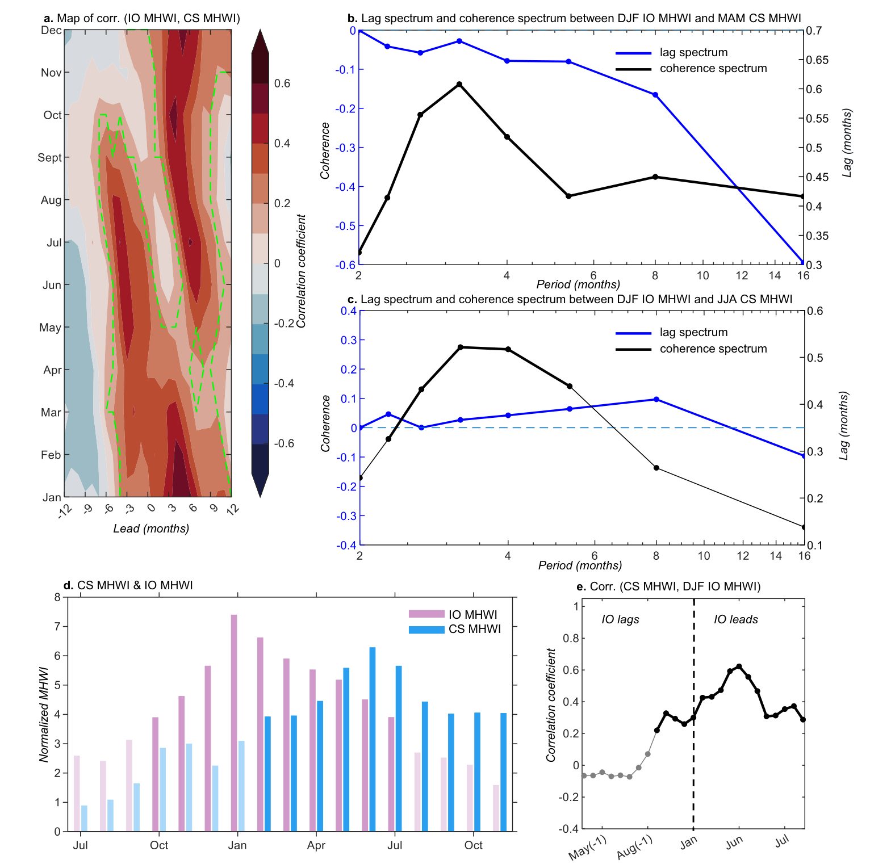
图1：印度洋（IO）与加勒比海（CS）海洋热浪指数（MHWI）的相关特征。
Fig. 1: Correlation characteristics of Indian Ocean (IO) and Caribbean Sea (CS) marine heatwave indices (MHWI).
a 各月份印度洋MHWI与加勒比海MHWI的超前—滞后相关图。
a Lead-lag correlation map between the IO MHWI and CS MHWI for each month.
纵轴表示各月份的印度洋MHWI，横轴正值（负值）表示印度洋MHWI超前（滞后）加勒比海MHWI的时间长度（单位：月）。
The vertical axis represents the IO MHWI for each month, while positive (negative) values on the horizontal axis indicate the length of time (in months) by which the IO MHWI leads (lags) the CS MHWI.
绿色虚线表示超过95%置信水平的区域。
Green dashed line denotes regions exceeding the 95% confidence level.
b 前一冬季（12月至2月，DJF）的季节平均印度洋MHWI与随后春季（3月至5月，MAM）的加勒比海MHWI之间的相干谱（黑色）和滞后谱（蓝色，单位：月）。
b The coherence spectrum (black) and lag spectrum (blue, unit: month) between the seasonal the previous-winter (December–February, DJF) IO MHWI and the following-spring (March–May, MAM) CS MHWI.
蓝色纵轴的正值（负值）表示印度洋MHWI超前（滞后）加勒比海MHWI的时间长度（单位：月）。
Positive (negative) values on the blue vertical axis indicate the length of time (in months) by which the IO MHWI leads (lags) the CS MHWI.
横轴表示信号周期（单位：年）。
The horizontal axis shows the signal period (in years).
粗线表示超过95%置信水平。
Bold lines denote above the 95% confidence level.
c 同（b），但针对季节平均DJF印度洋MHWI与随后夏季（6月至8月，JJA）的加勒比海MHWI。
c as in (b), but for seasonal DJF IO MHWI and the following-summer (June–August, JJA) CS MHWI.
d 强印度洋海洋热浪事件前后的平均印度洋MHWI（紫色柱）和加勒比海MHWI（蓝色柱）。
d Averaged IO MHWI (purple bars) and CS MHWI (blue bars) before and after intense IO MHW events.
深色柱表示显著性超过95%的部分。
The dark-colored bars represent the portions with significance exceeding 95%.
e 北半球冬季（DJF）印度洋MHWI与加勒比海MHWI的超前—滞后相关。
e Lead-lag correlation between the boreal winter (DJF) IO MHWI and CS MHWI.
粗线表示超过95%置信水平。
Bold lines denote above the 95% confidence level.
横轴表示3个月平均加勒比海MHWI的中心月份。
horizontal axis indicate the center month of 3-month averaged CS MHWI.
图内文字对照
a. 相关图（印度洋MHWI，加勒比海MHWI）
a. Map of corr. (IO MHWI, CS MHWI)
b. DJF印度洋MHWI与MAM加勒比海MHWI之间的滞后谱和相干谱
b. Lag spectrum and coherence spectrum between DJF IO MHWI and MAM CS MHWI
c. DJF印度洋MHWI与JJA加勒比海MHWI之间的滞后谱和相干谱
c. Lag spectrum and coherence spectrum between DJF IO MHWI and JJA CS MHWI
d. 加勒比海MHWI与印度洋MHWI
d. CS MHWI & IO MHWI
e. 相关（加勒比海MHWI，DJF印度洋MHWI）
e. Corr. (CS MHWI, DJF IO MHWI)
相干谱
coherence spectrum
滞后谱
lag spectrum
印度洋超前
IO leads
印度洋滞后
IO lags
周期（月）
Period (months)
相干性
Coherence
滞后（月）
Lag (months)
相关系数
Correlation coefficient
标准化MHWI
Normalized MHWI
超前（月）
Lead (months)
印度洋MHWI
IO MHWI
加勒比海MHWI
CS MHWI
印度洋—太平洋—大西洋罗斯贝波列中大气桥的产生与传播特征
The generation and propagation characteristics of the atmospheric bridge in Indo-Pacific-Atlantic Rossby wave tran
由于印度洋与加勒比海位于不同海盆，印度洋海洋热浪不能直接影响遥远的加勒比海。
Given that IO and the CS reside in different ocean basins, MHWs in the IO cannot directly influence the distant CS.
因此，所观测到的遥相关不能归因于直接的海洋过程。
The observed teleconnection, consequently, cannot be ascribed to direct oceanic processes.
相反，这类跨海盆相互作用通常与大尺度大气活动有关[10]。
Instead, large-scale atmospheric activities are typically linked to such cross-ocean-basin interactions[10].
我们将其称为印度洋—太平洋—大西洋遥相关，它可能是一支向东传播的罗斯贝波列（IPAT）。
We term this the Indo-Pacific-Atlantic teleconnection, which may potentially be an eastward-propagating Rossby wave train (IPAT).
我们假设，DJF印度洋海洋热浪的信号和能量通过IPAT向东传输到北大西洋，随后经局地海气相互作用增强加勒比海海洋热浪活动。
We hypothesize that the signals and energy from DJF IO MHWs are transmitted eastward to the North Atlantic Ocean via the IPAT, subsequently enhancing MHW activities in CS through local air-sea interactions.
在强DJF印度洋海洋热浪期间，热带西印度洋、特别是赤道附近及其以南地区，出现了超过0.5 °C的SST异常（SSTa）（见图S2a）。
During intense DJF IO MHWs, SST anomalies (SSTa) exceeding 0.5 °C were observed in the tropical western IO, particularly near and south of the equator (see Fig. S2a).
与此同时，海洋热浪日数异常的空间型态与SSTa的分布十分相似。
Concurrently, the spatial pattern of MHW day anomalies closely resembled the distribution of SSTa.
如图S2a所示，与气候态相比，强DJF印度洋海洋热浪期间，热带西印度洋大部分地区的海洋热浪日数每月增加超过6天。
As depicted in Fig. S2a, compared to the climatological state, the MHW days in most regions of the tropical western IO increased by over 6 days per month during intense DJF IO MHWs.
强DJF印度洋海洋热浪期间，赤道印度洋的暖SST异常形成了大气桥，改变其上方的大气环流。
Warm SSTa in the equatorial Indian Ocean during intense DJF IO MHWs forms an atmospheric bridge that alters the overlying atmospheric circulation.
观测表明，在强DJF印度洋海洋热浪期间，印度洋部分区域上方的上升运动贯穿整个大气层，其中心位于赤道附近，与海洋热浪活跃中心相对应（图S5a）。
Observations reveal that during intense DJF IO MHWs, ascending motions permeate the entire atmosphere over certain regions of the IO, with a center situated near the equator, corresponding to the active MHW center (Fig. S5a).
同时，在强DJF印度洋海洋热浪期间，赤道西印度洋和东非出现显著降水异常（图S5b、c）。
Meanwhile, during strong DJF IO MHWs, significant precipitation anomalies occur over the equatorial western Indian Ocean and East Africa (Fig. S5b, c).
这些异常可能与印度洋海洋热浪的暖SST有关；此前研究也曾得出暖印度洋SST增强东非降水的类似结论[45,46]。
These anomalies are likely associated with the warm SSTs of the IO MHWs, and similar conclusions regarding enhanced East African rainfall by warm Indian Ocean SSTs have been reported in previous studies[45,46].
赤道西印度洋和东非的降水异常及其伴随的潜热释放，可能对高层大气构成扰动，从而激发罗斯贝波活动。
The precipitation anomalies and associated latent heat release over the equatorial western Indian Ocean and East Africa may act as a disturbance to the upper-level atmosphere, thereby exciting Rossby wave activity.
这表明，DJF印度洋海洋热浪可以作为一种扰动，通过影响大气上升运动和降水，触发高层大气罗斯贝波列，从而启动IPAT大气桥过程。
This indicates that the DJF IO MHWs can function as a perturbation, triggering upper atmospheric Rossby wave trains by influencing atmospheric ascending motions and precipitation, thereby initiating the IPAT atmospheric bridge process.
为确定IPAT发生在动力学上是否可行，我们分析了印度洋上空同期的罗斯贝波活动。
To ascertain the dynamic feasibility of the IPAT occurrence, we conducted an analysis of concurrent Rossby wave activity over the IO.
我们通过计算200 hPa罗斯贝波源（RWS）的变化，量化罗斯贝波列活动强度的变化。
Variations in the intensity of Rossby wave train activity were quantified by calculating changes in the Rossby wave source (RWS) at 200 hPa.
图S6表明，DJF印度洋海洋热浪活跃区域附近的RWS显著增强，说明DJF印度洋海洋热浪能够增强热带西印度洋和东非上空同期的罗斯贝波活动。
Figure S6 reveals a significant enhancement of the RWS near the active region of the DJF IO MHWs, indicating that the DJF IO MHWs can lead to increased concurrent Rossby wave activity over tropical western IO and East Africa.
此外，我们基于水平非均匀基本流，计算了200 hPa等压面上纬向波数1–7的定常罗斯贝波轨迹（图2a），重点考察热带印度洋上空（0°–10°S，30°–70°E）的波源。
Additionally, stationary Rossby wave trajectories in 200 hPa isobaric surface were computed based on non-uniform horizontal basic flows for Rossby standing waves with zonal wave numbers ranging from 1 to 7 (Fig. 2a), focusing on the wave source above the tropical IO (0°–10°S, 30°–70°E).
然后，根据波射线追踪结果，我们计算了罗斯贝波射线通量（WRF），以更好地分析传播路径和强度（图2b）。
Then, based on the results of wave ray tracing, we calculated the Rossby wave ray flux (WRF) to better analyze the propagation paths and intensity (Fig. 2b).
波射线追踪与WRF的结果展示了罗斯贝波列的完整轨迹：波列在强DJF印度洋海洋热浪期间产生于赤道印度洋上空，起初在背景东风作用下向西传播至东非。
The results of the wave ray tracing and WRF depict the full trajectory of the Rossby wave train: generated over the equatorial Indian Ocean during intense DJF IO MHWs, it initially propagates westward toward East Africa under the background easterlies.
随后，与认为偏南气流有利于能量向北传播的理论研究[47,48,49]一致，波列从东非转向北传播，抵达北非和中东。
Subsequently, consistent with theoretical works[47,48,49], which posit that a southerly flow enables northward energy propagation, the wave train turns northward from East Africa to northern Africa and the Middle East.
在背景经向气流引导下，这一路径最终使起源于热带的波列到达西风带，再由西风带引导向东传播至北大西洋。
Steered by the background meridional flow, this path ultimately allows the tropical-originated wave train to reach the westerly wind belt, which guides it eastward to the North Atlantic.
图2b给出了强DJF印度洋海洋热浪期间200 hPa经向风场异常。
Figure 2b depicts the anomalies of meridional wind fields at the 200 hPa level during the intense DJF IO MHWs.
通过分析同期大气环流异常和WRF，可以识别出与IPAT有关的几个关键大气活动中心，从而阐明其在大气中的传播路径。
Through the analysis of concurrent atmospheric circulation anomalies and WRF, several key atmospheric activity centers associated with IPAT can be identified, thereby elucidating its propagation path in the atmosphere.
图2a的波射线轨迹和图2b的WRF矢量均与大气环流异常中心相吻合，这证实了IPAT在动力学上的合理性。
The alignment of both the wave ray trajectories in Fig. 2a and the WRF vectors in Fig. 2b with the centers of atmospheric circulation anomalies affirms the dynamical rationality of the IPAT.
此外，我们使用水行星配置的CAM6数值模式开展模拟试验，研究DJF印度洋海洋热浪与IPAT之间的远程相关。
Furthermore, a simulation experiment was conducted to investigate the remote correlation between the DJF IO MHWs and the IPAT, utilizing the CAM6 numerical model in aquaplanet mode.
如图2c所示，模拟总体上再现了与IPAT相关的大尺度波动活动特征。
As illustrated in Fig. 2c, it broadly reproduces the large-scale wave activity characteristics associated with the IPAT.
起源于印度洋上空的波射线先向西传播，直到进入西风带后转而向东传播，其轨迹与观测资料一致。
Wave rays originating over the IO propagated westward till entering the westerlies and then propagated eastward, exhibiting a trajectory consistent with observational data.
太平洋和大西洋的低纬度至中纬度也出现了大气波动活动中心；模拟在北大西洋上空产生了局地大气环流异常，但其具体空间型态和振幅与再分析资料有所不同。
Atmospheric wave activity centers also emerged in the low to middle latitudes of the Pacific and Atlantic Oceans, with the simulation producing local atmospheric circulation anomalies over the North Atlantic, though the detailed spatial pattern and amplitude differ from those in the reanalysis data.
这些差异可能源于水行星配置的局限：其中背景波导更加沿纬向分布，导致波列也更偏向纬向。
These discrepancies may be attributed to limitations in the aquaplanet setup, where the background wave guide is more zonal, leading to a more zonally oriented wave train.
不过，加勒比海上空仍出现了相似的经向型态，进而起到减弱哈德莱环流的作用。
However, a similar meridional pattern happens over the CS, which in turn acts to reduce the Hadley cell circulation.
总体而言，模式模拟大体再现了由DJF印度洋海洋热浪驱动的大气波列向东传播的特征，并呈现出与IPAT类似的特点。
Overall, the model simulation broadly reproduces the eastward propagation characteristics of the atmospheric wave train driven by DJF IO MHWs, exhibiting features analogous to those of the IPAT.
我们还利用ERA5资料支持了图S5a和图2b所示结论（见图S7）。
We also used the data from ERA5 to support the conclusions presented in Fig. S5a and Fig. 2b (see Fig. S7).
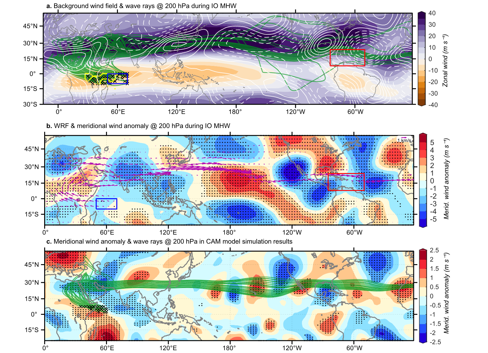
图2：强北半球冬季（DJF）印度洋（IO）海洋热浪（MHWs）期间的大气环流状况。
Fig. 2: The atmospheric circulation conditions during intense boreal winter (DJF) Indian Ocean (IO) marine heatwaves (MHWs).
a 在水平非均匀背景流中计算的200 hPa定常罗斯贝波轨迹（绿色曲线，纬向波数1–7），起点（以十字标记）位于热带印度洋上空（30°–70°E，0°–10°S）。
a Stationary Rossby wave trajectories at 200 hPa (green curves, zonal wavenumbers 1–7) computed in a horizontally non-uniform background flow, with their starting points (marked by a cross) located above the tropical Indian Ocean (30°–70°E, 0°–10°S).
填色表示200 hPa纬向风场；等值线表示经向风场（间隔：2 m s⁻¹，实线为正、虚线为负）。
Shading shows the 200 hPa zonal wind field; contours indicate the meridional wind field (interval: 2 m s⁻¹, solid positive, dashed negative).
黄色等值线勾勒出罗斯贝波源（RWS）异常显著的区域。
Yellow contours outline regions of significant Rossby wave source (RWS) anomalies.
蓝框和红框分别表示印度洋（50°–70°E，0°–10°S）及加勒比海（CS；50°–85°W，8°–24°N）海洋热浪指数的定义区域。
Blue and red boxes indicate the definition regions of IO (50°–70°E, 0°–10°S) and Caribbean Sea (CS; 50°–85°W, 8°–24°N) MHW index, respectively.
b 强DJF印度洋海洋热浪期间的200 hPa经向风异常（填色）和水平罗斯贝波射线通量（WRF；紫色矢量，纬向波数1–7）。
b 200 hPa meridional wind anomalies (shading) and horizontal Rossby wave ray flux (WRF; purple vectors, zonal wavenumbers 1–7) during intense DJF IO MHWs.
打点表示流函数异常达到95%置信水平的区域。
Dots indicate the areas of stream function anomalies with the 95% confidence level.
c 同（b），但为CAM6模拟结果，绿色波射线轨迹同（a）。
c as in (b), but for CAM6 simulation results, with the green wave ray trajectories as in (a).
图内文字对照
a. 印度洋海洋热浪期间200 hPa背景风场与波射线
a. Background wind field & wave rays @ 200 hPa during IO MHW
b. 印度洋海洋热浪期间200 hPa的WRF与经向风异常
b. WRF & meridional wind anomaly @ 200 hPa during IO MHW
c. CAM模式模拟结果中200 hPa的经向风异常与波射线
c. Meridional wind anomaly & wave rays @ 200 hPa in CAM model simulation results
纬向风（m s⁻¹）
Zonal wind (m s⁻¹)
经向风异常（m s⁻¹）
Merid. wind anomaly (m s⁻¹)
1 km/s
1 km/s
印度洋—太平洋—大西洋罗斯贝波列在加勒比海的海气相互作用，及其对春季（MAM）和夏季（JJA）加勒比海海洋热浪的影响
The air-sea interaction of the Indo-Pacific-Atlantic Rossby wave train in the Caribbean Sea and its impact on spring (MAM) and summer (JJA) Caribbean Sea MHWs
在DJF期间，IPAT通过罗斯贝波列将印度洋信号传输至太平洋和北大西洋。
During DJF, IPAT transmits signals from the IO to the Pacific and North Atlantic via Rossby wave trains.
为阐明北大西洋上空大气对这一信号的同期响应，我们研究了200 hPa高层大气的辐合与辐散，以及500 hPa中层大气的垂直运动（图3a）。
To elucidate the atmospheric response over the North Atlantic to this signal during the concurrent period, we investigate the convergence and divergence in the upper atmosphere at 200 hPa, as well as the vertical motion in the middle atmosphere at 500 hPa (Fig. 3a).
在强DJF印度洋海洋热浪期间，可以观测到罗斯贝波活动引起的显著高层大气辐合与辐散，它们分别在中层大气诱发下沉和上升运动。
Significant convergence and divergence movements in the upper atmosphere, resulting from Rossby wave activity, are observed during the intense DJF IO MHWs, thereby inducing descending and ascending motions, respectively, in the middle atmosphere.
大气下沉和上升的活动中心分别位于加勒比海以南的赤道附近（10°S–10°N），以及其北侧的中低纬度地区（20°–30°N）。
The activity centers of atmospheric sinking and rising are respectively located near the equator to the south of the CS (10°S–10°N) and in the mid-to-low latitude regions to the north (20°–30°N).
为考察这种经向运动偶极型态对海洋的影响，我们分析了强DJF印度洋海洋热浪期间整个大气柱的动力和热力特征，从动力与热力两个角度研究DJF IPAT信号对同期北大西洋大气的影响。
To investigate the impact of these movement patterns dipole in the meridional direction on the ocean, we examined the dynamical and thermal characteristics of the entire atmospheric column during intense DJF IO MHWs, thereby analyzing the influence of the DJF IPAT signals on the concurrent North Atlantic atmosphere from both dynamical and thermal perspectives.
从动力角度看，DJF大气辐合与辐散导致赤道附近下沉、中低纬度上升，有利于同期形成与背景环流相反的反哈德莱环流异常（图3b和图S8）。
From a dynamical perspective, the DJF atmospheric convergence and divergence result in downward motion near the equator and upward motion in the middle and low latitudes, favoring the formation of a concurrent anti-Hadley circulation anomaly that is opposite to the background circulation (Fig. 3b and Fig. S8).
因此，这一DJF异常减弱了大气垂直运动，并在加勒比海上空同时产生异常偏南风。
Consequently, this anomaly in DJF attenuates the vertical motion of the atmosphere and generates an anomalous southerly wind over the CS concurrently.
从热力角度看，强DJF印度洋海洋热浪期间，北大西洋上空整个大气柱都发生了不同幅度的增暖（图3b）。
From a thermal perspective, the entire atmospheric column over the North Atlantic has undergone warming of varying magnitudes during intense DJF IO MHWs (Fig. 3b).
这一现象源于大气对波动活动的调整：整个大气层的位势高度升高，继而使大气厚度增加（见图S9a）。
This phenomenon is attributed to atmospheric adjustments in response to wave activity, leading to an increase in the geopotential height of the entire atmospheric layer, which in turn results in an enhancement of atmospheric thickness (see Fig. S9a).
Li等[50]表明，大气厚度增加有助于整个大气层增暖。
Li et al.[50] demonstrate that an increase in atmospheric thickness contributes to the warming of the entire atmospheric layer.
值得注意的是，高层大气增暖幅度超过低层，这通常意味着大气结构更加稳定、对流减弱。
Notably, the amplitude of warming in the higher atmospheric levels exceeds that in the lower levels, typically suggesting a more stable atmospheric structure and diminished convection.
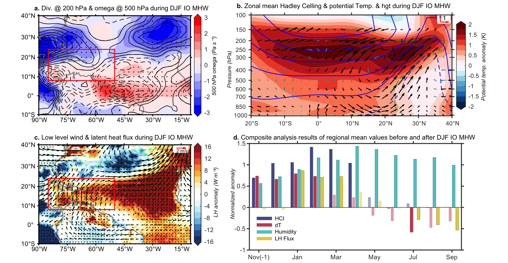
图3：强北半球冬季（DJF）印度洋（IO）海洋热浪（MHWs）期间，印度洋—太平洋—大西洋罗斯贝波列（IPAT）在加勒比海（CS）的海气相互作用。
Fig. 3: Air–sea interaction of the Indo-Pacific-Atlantic Rossby wave train (IPAT) in the Caribbean Sea (CS) during intense boreal winter (DJF) Indian Ocean (IO) marine heatwaves (MHWs).
a 强DJF印度洋海洋热浪期间200 hPa散度（等值线，间隔106 s−1）与500 hPa Omega（填色）的分布。
a Distribution of 200 hPa divergence (isopleths, interval 106 s−1) and 500 hPa Omega (shading) during intense DJF IO MHW.
打点表示达到95%置信水平的区域。
Dots indicate the areas with the 95% confidence level.
红框表示加勒比海MHWI的定义区域（50°–85°W，8°–24°N）。
Red boxes indicate the definition regions of CS MHWI (50°–85°W, 8°–24°N).
b 强DJF印度洋海洋热浪期间，大西洋上空纬向平均（50°–85°W）的速度异常（箭头）、位温（填色）与位势高度（hgt，单位：gpm）异常（等值线，间隔10 gpm）的纬度—高度分布。
b The latitude-height distribution of zonally averaged (50°–85°W) velocity anomalies (quivers), potential temperature (shading), and geopotential height (hgt, unit: gpm) anomalies (isopleths, interval 10 gpm) over Atlantic during intense DJF IO MHWs.
参考箭头（白框内红色箭头）表示水平风速1 m/s和垂直速度0.01 Pa/s。
The reference quiver (red, in white box) represents a horizontal wind speed of 1 m/s and a vertical velocity of 0.01 Pa/s.
为便于显示，垂直速度分量按100倍缩放。
Note that the vertical velocity component is scaled by a factor of 100 for visualization.
黑色箭头（绿色虚线）表示速度（位势高度）的置信水平超过95%，实线（虚线）表示正值（负值）。
Black quivers (green dashed line) indicate velocity (geopotential height) confidence exceed 95%, and solid (dashed) lines indicate positive (negative) values.
c 强DJF印度洋海洋热浪期间，北大西洋区域的表面潜热通量异常（填色）与925 hPa风异常（箭头）。
c Surface latent heat flux anomalies (shading) and 925 hPa wind anomalies (quivers) in the North Atlantic Ocean region during intense DJF IO MHWs.
黑色箭头（打点）表示速度（通量）的置信水平超过95%。
Black quivers (dots) indicate velocity (flux) confidence exceed 95%.
d 强DJF印度洋海洋热浪之后，加勒比海区域平均的若干变量标准化异常的合成演变：哈德莱环流指数（HCI；定义为850与200 hPa纬向风之差）、海气温差（dT，正值表示空气更暖）、近地面比湿（1000与925 hPa的平均值）以及表面潜热通量（LH；向下为正）。
d Composite evolution of normalized anomalies of several variables averaged over the CS region following intense DJF IO MHWs: Hadley Cell Index (HCI; defined as the difference in zonal wind between 850 and 200 hPa), air–sea temperature difference (dT, positive indicates air is warmer), near-surface specific humidity (average of 1000 and 925 hPa), and surface latent heat flux (LH; positive downward).
图内文字对照
a. DJF印度洋海洋热浪期间200 hPa散度与500 hPa的omega
a. Div. @ 200 hPa & omega @ 500 hPa during DJF IO MHW
b. DJF印度洋海洋热浪期间纬向平均的哈德莱环流、位温与位势高度
b. Zonal mean Hadley Celling & potential Temp. & hgt during DJF IO MHW
c. DJF印度洋海洋热浪期间低层风与潜热通量
c. Low level wind & latent heat flux during DJF IO MHW
d. DJF印度洋海洋热浪前后区域平均值的合成分析结果
d. Composite analysis results of regional mean values before and after DJF IO MHW
500 hPa的omega（Pa s⁻¹）
500 hPa omega (Pa s⁻¹)
位温异常（K）
Potential temp. anomaly (K)
气压（hPa）
Pressure (hPa)
潜热通量异常（W m⁻²）
LH anomaly (W m⁻²)
标准化异常
Normalized anomaly
哈德莱环流指数
HCI
海气温差
dT
湿度
Humidity
潜热通量
LH Flux
2 m/s
2 m/s
大尺度大气活动对SST的影响，主要通过海气界面热通量实现[51,52,53]。
The influence of large-scale atmospheric activities on SST is primarily mediated through heat flux at the air-sea interface[51,52,53].
为验证海气界面热通量对加勒比海暖SST异常的作用，我们分析了强DJF印度洋海洋热浪期间及之后加勒比海区域的混合层热收支；结果表明，潜热损失的异常减少，是印度洋海洋热浪之后加勒比海混合层SST异常的主要驱动因素，可解释82%的方差。
To verify the role of air-sea interface heat flux in the warm SSTa in the Caribbean Sea, a mixed-layer heat budget analysis within CS region during and after the intense DJF IO MHW period is performed, and the results indicate that an anomalous reduction in latent heat loss is the primary driver of the mixed-layer SST anomalies in the CS following IO MHWs, accounting for 82% of the variance.
（图S10）。
(Fig. S10).
按照Gupta等[32]的方法框架，我们进一步考察了DJF印度洋海洋热浪事件之后3–6个月的逐日SST，发现平均SST显著高于气候态（p < 0.01），而方差没有显著差异（p = 0.06；图S11）。
Consistent with the methodological framework of Gupta et al.[32], we further examine the daily SST during the 3–6 months following DJF IO MHW events and found that mean SST is significantly higher than climatology (p < 0.01) while the variance shows no significant difference (p = 0.06; Fig. S11).
这表明，加勒比海海洋热浪活动增加主要由背景SST升高驱动，而非由逐日变率变化驱动；背景SST升高是上述大气强迫的直接结果。
This indicates that the increased CS MHW activity is primarily driven by the rise in background SST—a direct consequence of the atmospheric forcing identified above—rather than by changes in daily variability.
这种大气强迫表现为图3c中的大尺度环流异常，其中经向大气运动的偶极型态在低层大气中诱发了环流异常偶极子。
This atmospheric forcing is manifested in the large‑scale circulation anomalies shown in Fig. 3c, where the meridional atmospheric movement dipole has induced a dipole of circulation anomalies in the lower atmosphere.
500 hPa大气异常下沉（上升）区域，在同期低层大气925 hPa对应为异常反气旋（气旋）中心。
Regions of abnormal atmospheric descent (ascent) at 500 hPa transform into concurrent anomalous anticyclonic (cyclonic) centers in the lower atmosphere at 925 hPa.
加勒比海南部的异常反气旋和北部的异常气旋形成的流场，与异常哈德莱环流下部的异常偏南风一致，两者均可解释海表异常偏南风的成因。
The anomalous anticyclone in the southern CS and the anomalous cyclone in the north form a flow field that is consistent with the anomalous southerly winds in the lower part of the abnormal Hadley circulation, both of which can explain the cause of the anomalous southerly winds at the sea surface.
异常偏南风与背景风场方向相反，因而减弱了局地背景风场，进而降低海表风速。
The anomalous southerly winds, being opposite in direction to the background wind field, weaken the local background wind field and consequently reduce the sea surface wind speed.
与此同时，这也有利于DJF期间更温暖、更湿润的空气从赤道地区流入，从而减小海气界面的温度差和湿度差（见图S9b）。
Simultaneously, this also facilitates the influx of warmer and more humid air from equatorial regions in DJF, thereby decreasing the temperature and humidity differences at the air-sea interface (see Fig. S9b).
整个大气层增暖，包括海表附近气温升高，使海气界面的温差减小。
The warming of the entire atmospheric layer, including an increase in sea surface air temperature, reduces the temperature difference at the air-sea interface.
在多种因素共同作用下，强DJF印度洋海洋热浪期间，加勒比海海水蒸发受到抑制，海气界面潜热损失异常减少，DJF加勒比海海洋热浪因而活跃起来。
Under the influence of various factors, the evaporation of seawater in the CS is suppressed during intense DJF IO MHWs, leading to an anomalous reduction in the latent heat loss at the air-sea interface and the activation of DJF CS MHW.
为评估DJF印度洋海洋热浪对随后春季（MAM）和夏季（JJA）加勒比海海洋热浪的影响，我们计算了DJF印度洋海洋热浪发生前后数个月的加勒比海区域平均（50°–85°W，8°–24°N）哈德莱环流指数（HCI）、海气界面温差（dT）、相对湿度和海气界面潜热通量（海洋增暖时为正）（图3d）。
To assessing the impact of the DJF IO MHW on the CS MHW during subsequent spring (MAM) and summer (JJA) seasons, we computed the Hadley Cell Index (HCI), air-sea interface temperature difference (dT), relative humidity, and latent heat flux (positive when warming the ocean) at the air-sea interface for the CS regional average (50°–85°W, 8°–24°N) over a few months before and after the occurrence of the DJF IO MHW (Fig. 3d).
HCI定义为850 hPa与200 hPa纬向风速分量之差。
The HCI is defined as the difference between the zonal wind speed component at 850 hPa and that at 200 hPa.
在强DJF印度洋海洋热浪期间，异常哈德莱环流、低层大气湿度增加和dT减小在随后两个月仍相对显著；在DJF印度洋海洋热浪之后3–5个月内，这些量没有剧烈变化，而是稳定在气候态水平附近。
During the intense DJF IO MHW, the anomalous Hadley circulation, the increase in low-level atmospheric humidity, and the decrease in dT all remain relatively significant for the subsequent two months and exhibit no drastic changes within 3–5 months following the DJF IO MHW, but instead stabilize near the climatological norm.
换言之，DJF印度洋海洋热浪所触发的信号能够增强同期及随后两个月的加勒比海海洋热浪活动，这与同期加勒比海海洋热浪逐渐活跃相对应。
In other words, the signals triggered by the DJF IO MHW can enhance the activity of the CS MHW during the same period and the subsequent two months, which corresponds to the gradual activation of concurrent CS MHW.
而这种环流环境在接下来3–5个月并未衰减，反而仍处于活跃状态，有利于加勒比海海洋热浪活动在春季（MAM）和夏季（JJA）保持较强。
And this circulation environment does not decay over the next 3–5 months, instead remaining in an active state, which facilitates the activity of CS MHWs to remain strong during spring (MAM) and summer (JJA).
这一现象值得进一步研究，因为暖SST异常通常会引发表面热通量反馈，抑制暖SST异常，使其无法长期持续[51,54,55]。
This phenomenon warrants further investigation, as warm SSTa typically elicits surface heat flux feedback that damps the warm SST anomalies, preventing their prolonged persistence[51,54,55].
在表面热通量反馈中，海洋大气边界层（MABL）对SST异常的热力调整具有重要作用[56,57,58]。
The Marine Atmospheric Boundary Layer (MABL) plays a significant role in the thermodynamic adjustment of SSTa in the surface heat flux feedback[56,57,58].
MABL是紧邻海表的低层大气。
The MABL is a layer of the lower atmosphere close to the sea surface.
在这一层内，空气物理性质沿垂直方向相对均匀，垂直运动强烈。
In this layer, the physical properties of the air are relatively uniform in the vertical direction, and vertical motion is intense.
由于MABL内空气的热含量和水汽容纳能力有限，海表附近大气从海水吸收热量和水汽后，会迅速与海水达到热平衡，此后两者之间不再继续交换热量[54]。
Due to the limited heat content and moisture-holding capacity of the air within the MABL, the atmosphere near the sea surface rapidly reaches thermal equilibrium with the seawater after absorbing heat and water vapor from it, and no further heat exchange takes place between them[54].
此时，MABL内强烈的垂直运动能够通过混合和输送消除低层空气的温湿异常，打破海气界面热平衡，使海水可以继续向空气散失热量。
At this point, the intense vertical motion within the MABL can eliminate the temperature and humidity anomalies in the lower air through mixing and transport, disrupting the thermal equilibrium at the air-sea interface and allowing the seawater to continue to lose heat to the air.
这一过程受到MABL稳定度、厚度以及海表上方空气物理特征的影响[59,60,61,62,63]。
This process is influenced by the stability and thickness of the MABL, as well as the physical characteristics of the air over the sea surface[59,60,61,62,63].
然而，如前所述，DJF IPAT信号引起的大气差异增暖会显著影响同期MABL特征。
However, as discussed previously, the differential warming of the atmosphere induced by the DJF IPAT signal exerts a significant influence on the concurrent MABL characteristics.
IPAT引起的高层增暖比低层更强（图3b），有利于提高MABL稳定度。
The warming in the upper layer caused by the IPAT is more intense than that in the lower layer (Fig. 3b), which facilitates an increase in the stability of the MABL.
此外，DJF的异常反哈德莱环流使加勒比海区域低层大气的风切变增强，MABL变薄（图S9c）。
Additionally, the anomalous anti-Hadley cell in DJF has caused an enhancement of wind shear and a thinner MABL in the lower atmosphere over CS region (Fig. S9c).
这些因素使MABL更加稳定，从而在强DJF印度洋海洋热浪期间抑制空气向上的垂直运动[59,61,63,64]。
These factors result in a more stable MABL, which suppresses the upward vertical movement of air during intense DJF IO MHWs[59,61,63,64].
海表空气通过垂直混合消除下方海水留下的暖湿特征的能力减弱，阻碍了海洋向大气散失热量的过程。
The ability of the air at the sea surface to remove the warm and moist imprint from the underlying seawater through vertical mixing is weakened, impeding the process of heat loss from the sea to the atmosphere.
加勒比海表面的水汽异常从前一冬季（DJF）持续到夏季（JJA），印证了这一过程（图3d）。
The abnormal water vapor on the surface of the CS persists from the previous winter (DJF) to summer ( JJA), corroborating this process (Fig. 3d).
这一过程最终表现为：在春季（MAM）和夏季（JJA），潜热通量没有出现表面热通量反馈冷却SST时预期的显著异常，从而使海洋热浪活动无法恢复到气候态水平。
This process ultimately manifests as the latent heat flux not showing a significant anomaly during spring (MAM) and summer (JJA) as expected in the surface heat flux feedback process to cool the SST, preventing the MHW activity from returning to the climatological norm.
相反，它仅使潜热通量维持在气候态水平附近，延长了IPAT信号对加勒比海海洋热浪的影响，使其从前一冬季到夏季（JJA）一直保持活跃。
Instead, it merely maintains the latent heat flux near the climatological norm, prolonging the impact of the IPAT signal on the CS MHW and keeping it active from the previous winter to summer (JJA).
我们还利用ERA5资料支持了图3a和图3b所示结论（见图S7）。
We also used the data from ERA5 to support the conclusions presented in Fig. 3a and Fig. 3b (see Fig. S7).
讨论
Discussion
本研究揭示了一条海盆间遥相关路径，将北半球冬季印度洋海洋热浪与增强的加勒比海春夏季海洋热浪联系起来（图4）。
This study reveals an inter‑basin teleconnection pathway linking boreal winter Indian Ocean MHWs to intensified spring–summer Caribbean Sea MHWs (Fig. 4).
我们提出一种大气桥机制，如图4a所概括：印度洋海洋热浪引起的深对流和降水激发了向东传播的印度洋—太平洋—大西洋罗斯贝波列（IPAT）。
We propose an atmospheric bridge mechanism, summarized in Fig. 4a, in which IO MHW‑induced deep convection and precipitation excites an eastward‑propagating Indo‑Pacific‑Atlantic Rossby wave train (IPAT).
如图4b所示，IPAT到达北大西洋后，会驱动异常的反哈德莱环流，并使上方大气柱增暖。
As shown in Fig. 4b, upon reaching the North Atlantic, the IPAT drives an anomalous anti‑Hadley circulation and warms the overlying atmospheric column.
这些变化减小了海气温度与湿度梯度、减弱海表风，继而抑制蒸发，导致海洋潜热损失不足。
These changes reduce the air–sea temperature and humidity gradients, weaken surface winds, and then suppress evaporation, leading to a deficit in latent heat loss from the ocean.
由此产生的海表增暖，在海洋大气边界层的稳定作用下持续到随后春季和夏季（图4c）。
The resulting surface warming persists into the following spring and summer through the stabilizing effect of the marine atmospheric boundary layer (Fig. 4c).
对1986–1987年DJF印度洋海洋热浪事件的详细个例研究证实了这一机制的稳健性（图S12–S16）。
The robustness of this mechanism is confirmed by a detailed case study of the 1986–1987 DJF IO MHW event (Figs. S12–S16).
所提出的机制为海洋热浪发生提供了季节尺度的预测因子，并展示了一个海盆的极端事件如何远程调控另一个海盆的极端事件。
This proposed mechanism offers a seasonal‑scale predictor for MHW occurrences and demonstrates how extreme events in one basin can remotely orchestrate extreme events in another.
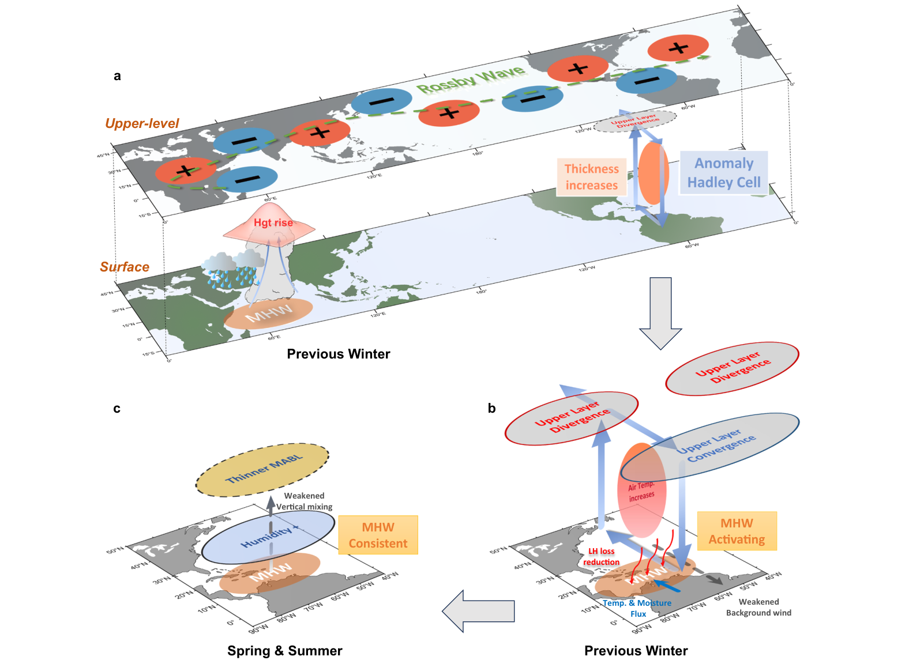
图4：北半球冬季（DJF）印度洋（IO）海洋热浪（MHWs）与加勒比海（CS）春夏季（MAM–JJA）海洋热浪联系机制示意图。
Fig. 4: Schematic of the mechanism linking boreal winter (DJF) Indian Ocean (IO) marine heatwaves (MHWs) to spring–summer (MAM–JJA) Caribbean Sea (CS) MHWs.
a 前一冬季（DJF）印度洋海洋热浪伴随着大气上升。
a The IO MHWs in the previous winter (DJF) accompanied the rise of the atmosphere.
随后，印度洋海洋热浪触发通过高层大气桥传播的罗斯贝波列，造成北大西洋上空高层辐散异常以及大气厚度增加。
Then, IO MHWs trigger a Rossby wave train propagating through the atmospheric bridge on the upper level, leading to a divergence anomaly on the upper level over the North Atlantic as well as the atmospheric thickness increase.
b 底层异常哈德莱环流导致水汽和热量流入，同时风速降低，最终使蒸发减弱、潜热损失减少、表层海水增暖，促使加勒比海海洋热浪在同期活跃起来。
b Abnormal Hadley circulation at the bottom layer led to the influx of moisture and temperature, as well as a decrease in wind speed, ultimately resulting in weakened evaporation, reduced latent heat loss, and heating of surface seawater, causing the CS MHWs to activate concurrently.
c 海洋大气边界层（MABL）更加稳定、厚度更薄，垂直混合减弱，抑制海洋向大气散热，使加勒比海海洋热浪活动从冬季持续到春季（MAM）和夏季。
c Marine atmospheric boundary layer (MABL) is more stable and thinner with weakened vertical mixing, suppressing heat loss from the sea to the atmosphere and maintaining MHW activity from winter to spring (MAM) and summer over the CS.
图内文字对照
罗斯贝波
Rossby Wave
高层
Upper-level
表面
Surface
位势高度升高
Hgt rise
厚度增加
Thickness increases
高层辐散
Upper Layer Divergence
异常哈德莱环流
Anomaly Hadley Cell
海洋热浪
MHW
前一冬季
Previous Winter
更薄的海洋大气边界层
Thinner MABL
减弱的垂直混合
Weakened Vertical mixing
湿度增加
Humidity +
海洋热浪持续
MHW Consistent
春季与夏季
Spring & Summer
高层辐合
Upper Layer Convergence
气温升高
Air Temp. increases
潜热损失减少
LH loss reduction
海洋热浪活跃起来
MHW Activating
温度与水汽通量
Temp. & Moisture Flux
减弱的背景风
Weakened Background wind
IOD和ENSO在印度洋—加勒比海海洋热浪遥相关中可能起到的调节作用，值得认真讨论。
The potential modulating role of the IOD and the ENSO in the IO–CS MHW teleconnection warrants careful discussion.
已知IOD和ENSO都强烈影响印度洋海洋热浪变率[27,37]，同时也对大西洋SST产生远程影响[65,66]。
Both IOD and ENSO are known to strongly influence the variability of MHWs in the Indian Ocean[27,37], and they also exert remote effects on Atlantic SST[65,66].
因此，它们可能有助于建立有利于印度洋—加勒比海海洋热浪遥相关的大尺度背景状态。
It is therefore plausible that they contribute to establishing the large-scale background state that facilitates the IO–CS MHW teleconnection.
然而，本研究的多方面证据表明，所识别的滞后关系在一定程度上仍独立于这些主导气候模态。
However, in this study, several lines of evidence suggest that the identified lagged relationship remains, to a certain extent, independent of these dominant climate modes.
从统计上看，通过滤波去除海洋热浪指数中的IOD和ENSO信号后，印度洋MHWI与加勒比海MHWI之间仍存在显著关联，保留了原始方差的51%（图S17和表S2）。
Statistically, after removing the signals of IOD and ENSO from the MHW indices through filtering, a significant association persists between the IO and CS MHWI, retaining 51% of the original variance (Fig. S17 and Table S2).
相比之下，原始ENSO—加勒比海海洋热浪相关系数（ENSO超前加勒比海MHWI 5个月）为0.44（R² = 19.4%）。
In contrast, the original ENSO–CS MHW correlation (ENSO leads CS MHWI by 5 months) is 0.44 (R² = 19.4%).
从加勒比海MHWI中去除印度洋海洋热浪影响后，偏相关降至0.19（R² = 3.6%，p < 0.05），仅保留原始ENSO—加勒比海海洋热浪方差的18%（表S2和图S18）。
After removing the influence of IO MHWs from CS MWHI, the partial correlation drops to 0.19 (R² = 3.6%, p < 0.05), retaining only 18% of the original ENSO–CS MHW variance (Table S2 and Fig. S18).
原始IOD—加勒比海海洋热浪相关系数为0.35（R² = 12.3%）；控制印度洋MHWI后，相关系数降至0.07（R² = 0.5%，p = 0.41），仅保留原始方差的4%（表S2和图S19）。
The original IOD–CS MHW correlation is 0.35 (R² = 12.3%); after controlling for IO MHWI, it falls to 0.07 (R² = 0.5%, p = 0.41), retaining only 4% of the original variance (Table S2 and Fig. S19).
这些结果表明，ENSO和IOD与加勒比海海洋热浪的表观关系，在很大程度上由印度洋起中介作用；而印度洋—加勒比海海洋热浪遥相关保留了相当大一部分独立于这些气候模态的成分。
These results demonstrate that the apparent relationships of ENSO and IOD with CS MHWs are largely mediated through the Indian Ocean, while the IO–CS MHW teleconnection retains a substantial component independent of these climate modes.
从动力学上看，这种大气响应型态以从印度洋延伸到加勒比海的中纬度罗斯贝波列为特征，与通常受ENSO或IOD扰动的典型东西向翻转环流不同。
Dynamically, the atmospheric response pattern—characterized by a mid-latitude Rossby wave train extending from the Indian Ocean to the Caribbean Sea—differs from the typical east–west overturning circulations usually perturbed by ENSO or IOD.
印度洋海洋热浪事件期间，热带大西洋对流层低层没有出现稳健的海盆范围纬向风异常（图S20），这支持了上述判断；如果遥相关主要通过变化的沃克环流实现，那么理应出现这种异常。
This is supported by the absence of robust, basin-wide zonal wind anomalies in the tropical Atlantic lower troposphere during IO MHW events (Fig. S20), which would be expected if the teleconnection were primarily mediated by an altered Walker circulation.
此外，去除ENSO和IOD信号后，印度洋海洋热浪期间加勒比海上空异常的反哈德莱环流并未发生根本改变（图S21）。
Furthermore, after removing the ENSO and IOD signals, the anomalous anti-Hadley circulation over the Caribbean Sea during IO MHW shows no fundamental change (Fig. S21).
综上，尽管IOD和ENSO可能塑造背景条件，并有可能增强印度洋与加勒比海海洋热浪之间的联系，但与加勒比海海洋热浪之间这一特定的3–6个月滞后联系，似乎主要通过IPAT机制实现。
In summary, although IOD and ENSO may shape the background conditions and could potentially enhance the connection between IO MHWs and CS MHWs, the specific 3–6 month lagged linkage with CS MHWs appears to be primarily channeled through the IPAT mechanism.
本研究强调，即便印度洋区域性极端SST增暖事件部分嵌入更大尺度的气候变率之中，它们仍可能激活不同的大气路径，随后影响遥远加勒比海的海洋热浪。
This study highlights that extreme regional SST warming events in the Indian Ocean, even when partially embedded within larger-scale climate variability, may activate distinct atmospheric pathways that subsequently influence MHWs in the remote Caribbean Sea.
本研究识别出一条不同于既有文献所强调的经典机制的海盆间遥相关路径。
This study identifies a distinct pathway for inter-basin teleconnection that differs from the canonical mechanisms emphasized in prior literature.
此前涉及太平洋的海气联系研究，大多强调赤道沃克环流大尺度调整的核心作用[67,68]。
Previous investigations into ocean-atmosphere linkages involving the Pacific have largely highlighted the central role of large-scale adjustments in the equatorial Walker Circulation[67,68].
此外，正如Wang[65]所指出的，印度洋主动影响北大西洋气候的具体过程仍缺乏充分认识，现有研究主要关注赤道大西洋变率或海盆尺度模态。
Furthermore, as noted by Wang[65], the specific processes by which the Indian Ocean actively influences North Atlantic climate remain insufficiently understood, with existing research focusing primarily on equatorial Atlantic variability or basin-scale modes.
在这一背景下，我们的发现揭示了一种不同的中纬度罗斯贝波列机制。
Against this backdrop, our findings reveal a distinct mid-latitude Rossby wave train mechanism.
IPAT起源于印度洋海洋热浪相关的SST强迫，经北半球中纬度西风波导向东传播，直接影响副热带加勒比海；后者是北大西洋一个重要的热带外区域，此前未被识别为这类遥相关的主要影响对象。
The IPAT originates from SST forcing associated with the IO MHW and propagates eastward via the Northern Hemisphere mid-latitude westerly waveguide, directly impacting the subtropical Caribbean Sea—a key extratropical region of the North Atlantic not previously identified as a primary target of such a teleconnection.
与沿纬向的沃克环流调整不同，这一路径通过对加勒比海局地哈德莱环流的经向调节发挥作用，从而影响低层风和表面热通量。
Unlike the zonally oriented Walker Cell adjustments, this pathway operates through meridional modulation of the local Hadley circulation over the Caribbean Sea, thereby affecting low-level winds and surface heat fluxes.
因此，本研究不仅回应了早期研究指出的机制认识空缺，还刻画了一条此前被忽视的印度洋影响热带外地区的路径，为理解区域极端增暖如何远程调控另一海盆的气候极端事件提供了更细致的视角。
Thus, our work not only addresses the mechanistic gap highlighted in earlier studies but also delineates a previously overlooked extratropical route of Indian Ocean influence, offering a refined perspective on how regional extreme warming can remotely orchestrate climate extremes in another ocean basin.
已有研究指出，许多海洋和大气过程对海洋热浪具有重要影响[4,24,27,69,70]。
Existing studies have pointed out that numerous oceanic and atmospheric processes have important impacts on MHW[4,24,27,69,70].
基于这些研究，研究者提出了许多海洋热浪预测分析方法[4,33,34]。
Based on these studies, many predictive analysis methods for MHW have been proposed[4,33,34].
然而，这些研究缺少对海洋热浪彼此之间相互作用的考察，而这正是本研究的重点。
However, these studies lack research on the interaction between MHWs themselves, which is the focus of this study.
通过分析海洋热浪与大气的相互作用，并结合大气桥的连接作用，本研究将这种联系拓展至海洋热浪与海洋热浪之间，证明海洋热浪也可以像其他天气和气候系统一样相互影响并形成遥相关，使我们能够从更广阔的视角理解海洋热浪。
By analyzing the interaction between MHW and the atmosphere and combining the connecting role of the atmospheric bridge, this study extends the connection to that between one MHW and another, proving that MHWs can also interact with each other and form teleconnections like other weather and climate systems, enabling us to understand MHW from a broader perspective.
所观测到的海洋热浪超前—滞后关系可能也是其他海洋区域的共同特征，可为海洋热浪发生提供潜在的季节尺度预测因子，并对改进海洋热浪相关灾害的防灾减灾策略具有重要潜力。
The observed lead-lag relationship between MHWs may be a common feature in other oceanic regions, offering a potential seasonal-scale predictor for MHW occurrences and holding significant potential for enhancing the prevention and mitigation strategies against MHW-related disasters.
方法
Methods
观测资料
Observations
本研究用于研究海洋热浪的SST资料来自美国国家海洋和大气管理局提供的逐日最优插值SST第2.1版（OISSTv2.1）[71]。
In this study, the SST data employed for the investigation of MHWs is sourced from the Daily Optimum Interpolation SST version 2.1 (OISSTv2.1) provided by the National Oceanic and Atmospheric Administration[71].
该数据集的空间分辨率为0.25°×0.25°，自1981年9月1日起提供资料。
This dataset has a spatial resolution of a 0.25°×0.25° grid and has been available since September 1st, 1981.
大气资料包括omega（垂直速度ω，单位Pa s⁻¹，其中，负值表示上升运动）、温度、低层大气湿度（1000和925 hPa比湿的平均值）以及风，均来自NCEP/NCAR再分析月平均数据集[72]。
The atmospheric data, including omega (Vertical velocity ω in Pa s⁻¹, where, negative values indicate upward motion.), temperature, low-level atmospheric humidity (average of 1000 and 925 hPa specific humidity) and winds, are obtained from the NCEP/NCAR reanalysis monthly mean dataset[72].
我们使用其中1982–2024年的资料，其水平网格为2.5°×2.5°，具有17个气压层。
We utilized the portion of this dataset spanning from 1982 to 2024 on a 2.5°×2.5° grid with 17 pressure levels.
降水资料来自全球降水气候中心（GPCC）[73]空间分辨率为1°×1°的月降水数据集，以及1982–2024年的气候预测中心合并降水分析（CMAP）[74]月平均数据集。
Precipitation data is obtained from the Global Precipitation Climatology Center (GPCC)[73] monthly precipitation dataset with a spatial resolution of 1° × 1° and the monthly mean Climate Prediction Center Merged Analysis of Precipitation (CMAP)[74] dataset from 1982 to 2024.
此外，月净热通量（定义向下为正）、2米气温、SST和边界层高度资料来自欧洲中期天气预报中心第五代再分析（ERA5）数据集，其空间分辨率为0.25°×0.25°[75]。
Additionally, the monthly net heat flux data (defined as positive when downward), 2-meter air temperature, SST, and boundary layer height data are obtained from the ECMWF Reanalysis v5 (ERA5) dataset, which has a spatial resolution of 0.25°×0.25°[75].
海气温差由2米气温和SST计算得到。
The air–sea temperature difference is computed from the 2-meter air temperature and SST.
这些资料用于了解海洋与大气之间的热量传递状况。
These data are used to understand the heat transfer situation between the ocean and the atmosphere.
为降低特定数据集可能带来的偶然性，我们用ERA5资料对所有基于NCEP资料得出的结论进行了比较和验证。
To mitigate the contingency of the dataset, all conclusions drawn from the NCEP data were compared and verified with the ERA5 data.
我们使用1982–2024年的全部资料，并去除了线性趋势。
We used all data from 1982 to 2024, with the linear trend removed.
异常值由月平均资料减去1981–2010年气候态得到。
Anomalies were calculated by subtracting the climatology for the period 1981–2010 from the monthly mean data.
海洋热浪的定义
Definition of marine heatwaves
海洋热浪按照Hobday等[1]的方法识别，定义为一种离散、持续的异常暖水事件，其间逐日SST至少连续5天超过随季节变化的第90百分位阈值。
MHWs are identified following Hobday, et al.[1] where a MHW is defined as a discrete prolonged anomalously warm water event during which daily SST exceeds the seasonally varying 90th percentile threshold for at least five consecutive days.
本研究采用固定基准期的定义。
A fixed-baseline definition is adopted in this study.
我们使用OISSTv2.1数据集，在每个网格上研究1982–2024年的海洋热浪。
We explore the MHWs from 1982 to 2024 using the OISSTv2.1 dataset on each grid.
为消除全球变暖对海洋热浪的影响，我们从SST资料中去除了线性趋势，并以整个可用时段（1982–2024年）为基准期。
The linear trend has been removed from the SST data to eliminate the influence of global warming on MHWs, and the entire available period (1982–2024) is used as the baseline.
海洋热浪日数定义为指定时段内发生海洋热浪的总持续时间（单位：天）。
The number of MHW days is defined as the total duration during which MHW occurs within a specific time period (unit: days).
为评估一个区域的海洋热浪事件，我们构建了基于区域平均逐月海洋热浪日数的海洋热浪指数（MHWI）。
To assess MHW events in a region, a marine heatwave index (MHWI) has been developed which is based on the regionally averaged monthly MHW days.
印度洋MHWI定义为0°–10°S、50°–70°E范围内逐月海洋热浪日数的平均值。
The IO MHWI is defined as the average of the monthly MHW days within the range of 0°–10°S and 50°–70°E.
加勒比海海洋热浪指数采用与印度洋MHWI相似的方法定义，但区域为8°–24°N、50°–85°W。
The CS MHW Index is defined in a similar manner to the IO MHWI, but its region is specified as 8°–24°N and 50°–85°W.
两个区域海洋热浪日数的年循环和季节平均海洋热浪阈值，分别见图S22和图S23。
The annual cycles of MHW days and the seasonally averaged MHW thresholds for the two regions are shown in Fig. S22 and Fig. S23, respectively.
鉴于海洋热浪事件的极端性质，为更好地把握其特征，应更加关注显著强海洋热浪发生的时段。
Given the extreme nature of MHW events, to better capture their characteristics, more attention should be paid to the periods when significantly intense MHWs occur.
因此，本研究对若干次强印度洋海洋热浪进行合成分析，以揭示海洋热浪对海洋和大气的影响。
Thus, in this study, a composite analysis of several intense IO MHWs is carried out to reveal the impacts of MHWs on both the ocean and the atmosphere.
去除线性趋势和年循环后，将北半球冬季（12月、1月和2月，简称DJF）印度洋MHWI超过一个标准差的事件定义为强DJF印度洋海洋热浪。
After removing the linear trend and the annual cycle, events in which the IO MHWI in boreal winter (December, January and February, DJF for short) exceeds one standard deviation are defined as strong DJF IO MHWs.
具体时间详见补充文件（表S1）。
The specific time details can be found in the supporting document (see Table S1).
罗斯贝波源和罗斯贝波射线
Rossby wave source and Rossby wave ray
为从动力学角度更准确地描述印度洋与加勒比海之间的大气桥，本研究采用了罗斯贝波源（RWS）与波射线追踪理论[47,48,76,77]。
To more accurately describe the atmospheric bridge between IO and CS from a dynamic perspective, the Rossby wave source (RWS) and wave ray tracing theory[47,48,76,77] were utilized in this study.
RWS的定义[78]为
The definition of RWS[78] is given by
(1)
(1)
其中，vχ为水平风的辐散分量，ζ为绝对涡度。
where vχ is the divergent component of the horizontal wind and ζ is the absolute vorticity.
在波动追踪方面，定常罗斯贝波射线轨迹理论由Hoskins和Karoly[79]提出，并由Li等[48,49]拓展，将背景流的经向分量纳入考虑，从而允许描述罗斯贝波的跨赤道传播。
For wave tracing, the stationary Rossby wave ray trajectories theory is developed by Hoskins and Karoly[79] and extended by Li et al.[48,49] to incorporate the meridional component of the background flow and enable cross-equatorial Rossby wave propagation.
该框架假设基本流在水平方向非均匀，并将局地群速度定义为
This framework assumes a horizontally nonuniform basic flow and defines the local group velocity defined by as
(2a)
(2a)
(2b)
(2b)
其中，是纬向风与经向风基本态的墨卡托投影，λ和φ分别表示经度与纬度，k和l分别为纬向与经向波数，为总波数，为基本态绝对涡度。
where is the Mercator projection of the basic states of zonal and meridional winds, λ and φ represent the longitude and latitude, respectively, k and l are the zonal and meridional wavenumbers, respectively, is the total wavenumber, and is the basic-state absolute vorticity.
变量为基本态流函数。
Variabl e is the basic-state stream function.
于是有
Then there are
(3a)
(3a)
(3b)
(3b)
其中，为随波射线运动的物质导数。
where is the material derivative moving with the wave ray.
利用式（2）和（3）进行数值积分，可得到水平非均匀基本流中的定常罗斯贝波射线轨迹（）。
Numerical integration using Eqs. (2) and (3) shows the stationary Rossby wave ray trace () in a horizontally nonuniform basic flow.
本研究采用Yang和Li[80]提出的水平罗斯贝波射线通量（WRF）方法。
This study employs the horizontal Rossby wave ray flux (WRF) method proposed by Yang and Li[80].
该方法综合了拉格朗日轨迹信息和欧拉局地通量特征，因此适用于热带地区，并能够区分不同波源的影响。
This method integrates both Lagrangian trajectory information and Eulerian local flux characteristics, making it applicable to tropical regions and capable of distinguishing the influence of different wave sources.
WRF定义为单位时间内穿过单位网格面积的波射线流量：
The WRF is defined as the flow of wave rays passing through a unit grid area per unit time:
(4)
(4)
其中，为波射线的平均传播速度，为网格面积。
where is the average propagation velocity of the wave ray, and is the grid area.
波射线速度按下式计算：
The wave ray velocity is calculated as:
(5)
(5)
这里，为地球半径，为纬度，和分别为射线穿过网格时沿经度和纬度方向经过的距离，为通过时间。
Here, is the Earth’s radius, is the latitude, and are the longitudinal and latitudinal distances traveled by the ray through the grid, and is the transit time.
数值模拟
Numerical simulation
为研究此前DJF印度洋海洋热浪的影响，我们使用社区大气模式第6版（Community Atmosphere Model，CAM6）进行了数值模拟。
To investigate the influences of the preceding DJF IO MHW, numerical simulations were performed with the Community Atmosphere Model Version 6 (CAM6).
CAM6选用QPC6组件配置，采用水行星假设，并由指定的SST场驱动。
The QPC6 component set is selected for CAM6, which employed the assumption of aquaplanet and driven by a prescribed SST field.
模拟的水平网格分辨率为1.9°（纬度）×2.5°（经度），垂直方向采用32层混合sigma—气压坐标。
The simulations use a 1.9° (lat) ×2.5° (lon) horizontal grid resolution, with a 32-hybrid sigma-pressure levels.
我们设计了两个采用不同下边界条件的CAM6试验：一个气候态控制试验和一个强迫试验，用于研究对强DJF印度洋海洋热浪强迫的敏感性。
We design two CAM6 experiments using different lower boundary conditions: one climatology control and one forcing simulation that are designed to investigate sensitivity to strong DJF IO MHW forcing.
在强迫试验中，我们将强DJF印度洋海洋热浪期间的平均SST异常线性叠加到赤道印度洋的气候态上，并对边界进行平滑处理，以消除突变的SST梯度。
For the forcing experiment, we linearly superimpose the average SST anomaly during the strong DJF IO MHW period onto the climatology in the equatorial IO, and we apply smoothing to the boundaries to eliminate abrupt SST gradients.
两组模拟均运行30年，并使用各自最后20年的结果进行分析。
The simulations are performed for 30 years, and the last 20 years of each is used for our analysis.
交叉谱分析
Cross-spectral analysis
为研究印度洋MHWI和加勒比海MHWI时间序列在不同频率下的关系，我们采用Blackman–Tukey交叉谱分析方法[81]。
To investigate the frequency-dependent relationship between IO MHWI and CS MHWI time series, we employed the Blackman-Tukey method of cross-spectral analysis[81].
对于两个离散时间序列和（其中），我们估计了自谱（和）及交叉谱（）。
For the two discrete time series, and (where ), the auto-spectra ( and ) and the cross-spectrum () were estimated.
为此，首先计算最大滞后为的自协方差和互协方差函数，其中取约，以兼顾谱分辨率和估计结果的稳定性[82]。
This was achieved by first computing the auto-covariance and cross-covariance functions up to a maximum lag , where was chosen to be approximately to balance spectral resolution against the stability of the estimates[82].
随后对这些协方差函数应用滞后窗，再进行傅里叶变换以得到谱[81,82]。
A lag window is then applied to these covariance functions before performing the Fourier transform to obtain the spectra[81,82].
由所得交叉谱推导出平方相干谱和滞后谱。
From the resulting cross-spectrum, the squared coherency spectrum and lag spectrum are derived.
交叉谱为复数，我们从中推导出两个关键量。
From the cross-spectrum, which is a complex number, we derived two key quantities.
首先，平方相干谱定义为：
First, the squared coherency spectrum, defined as:
(6)
(6)
它衡量两序列在每个频率上的线性相关性，取值范围为0到1。
measures the linear correlation between the two series at each frequency , with values ranging from 0 to 1.
其次，由交叉谱计算相位谱。
Second, the phase spectrum, , was calculated from the cross-spectrum.
它表示两个序列在给定频率下各分量之间的相位超前或滞后关系。
It indicates the phase lead/lag relationship between the components of the two series at a given frequency.
随后利用相位信息计算滞后谱，将相位角转换为时间延迟：
This phase information was then used to compute the lag spectrum, , which converts the phase angle into a time delay:
(7)
(7)
其中，为周期。
where is the period.
正（负）相位表示超前（滞后）。
A positive (negative) phase indicates that leads (lags) .
相干性估计的统计显著性，采用95%置信水平的F检验评估。
The statistical significance of the coherence estimates was assessed using an F-test at the 95% confidence level.
该检验考虑了平滑谱估计所具有的自由度。
The test accounts for the degrees of freedom inherent in the smoothed spectral estimates.
相干性的临界值由自由度分别为2和的F分布得到。
The critical value for coherence is derived from the F-distribution with 2 and degrees of freedom.
显著性检验
Significance test
两个自相关序列之间线性相关分析的统计显著性，采用双尾Student t检验评估，其有效自由度（Neff）为：
The statistical significance in the linear correlation analysis between two autocorrelated series is examined by the two-tailed Student’s t-test with the effective number of degrees of freedom (Neff) given by:
(8)
(8)
其中，N表示样本量，ρXX（j）表示样本时间序列X的自相关，ρYY（j）表示Y的自相关，j为时间滞后[83]。
where N denotes the sample size and ρXX (j) stands for the autocorrelation of sampled time series X and ρYY (j) is for Y, while j is the time lag[83].
假定资料服从正态分布。
The data were assumed to follow a normal distribution.
数据可用性
Data availability
本研究使用的OISST资料可从NOAA资料库获取：https://psl.noaa.gov/data/gridded/data.noaa.oisst.v2.highres.html。
The OISST data used in this study are available in the NOAA repository under https://psl.noaa.gov/data/gridded/data.noaa.oisst.v2.highres.html.
本研究使用的NCEP/NCAR再分析资料可从NOAA资料库获取：https://psl.noaa.gov/data/gridded/data.ncep.reanalysis.html。
The NCEP/NCAR Reanalysis data used in this study are available in the NOAA repository under https://psl.noaa.gov/data/gridded/data.ncep.reanalysis.html.
本研究使用的ERA5资料可从哥白尼气候数据存储库获取：https://cds.climate.copernicus.eu/。
The ERA5 data used in this study are available in the Copernicus Climate Data Store under https://cds.climate.copernicus.eu/.
本研究使用的GPCC降水资料可从NOAA资料库获取：https://psl.noaa.gov/data/gridded/data.gpcc.html。
The GPCC precipitation data used in this study are available in the NOAA repository under https://psl.noaa.gov/data/gridded/data.gpcc.html.
本研究使用的CMAP降水资料可从NOAA资料库获取：https://psl.noaa.gov/data/gridded/data.cmap.html。
The CMAP precipitation data used in this study are available in the NOAA repository under https://psl.noaa.gov/data/gridded/data.cmap.html.
代码可用性
Code availability
本研究使用的分析代码已存放于Zenodo：https://doi.org/10.5281/zenodo.19788288。
The analysis codes used in this study have been deposited in Zenodo under the following https://doi.org/10.5281/zenodo.19788288.
代码使用MATLAB编写，地图可视化使用M_Map工具箱。
The codes are written in MATLAB, utilizing the M_Map toolbox for map visualizations.
所有地图均使用MATLAB 2023b生成。
All maps were generated using MATLAB 2023b.
致谢
Acknowledgements
作者感谢Yazhou Zhang、Yina Diao、Yang Zhao、Mian Zhu和Hongqiang Dong的帮助。
The authors would like to thank Yazhou Zhang, Yina Diao, Yang Zhao, Mian Zhu, and Hongqiang Dong for their help.
我们也感谢三位匿名审稿人提出的建设性意见和建议，它们极大地改进了本文稿。
We also thank the three anonymous reviewers for their constructive comments and suggestions, which greatly improved this manuscript.
资助
Funding
J.L.与Z.L.感谢国家自然科学基金（NSFC）项目（42288101）、崂山实验室（编号LSKJ202202600）及山东省自然科学基金项目（ZR2019ZD12）对本研究的支持。
J.L. and Z.L. acknowledge support for the research of this work from the National Natural Science Foundation of China (NSFC) Project (42288101), Laoshan Laboratory (No. LSKJ202202600), and Shandong Natural Science Foundation Project (ZR2019ZD12).
作者信息
Author information
作者及其所属机构
Authors and Affiliations
1 中国海洋大学深海圈层与地球系统前沿科学中心（DOMES），中国青岛。Zeyu Li与Jianping Li。
1 Frontiers Science Center for Deep Ocean Multi-spheres and Earth System (DOMES), Ocean University of China, Qingdao, China. Zeyu Li & Jianping Li
2 中国海洋大学物理海洋学重点实验室，中国青岛。Zeyu Li与Jianping Li。
2 Key Laboratory of Physical Oceanography, Ocean University of China, Qingdao, China. Zeyu Li & Jianping Li
3 中国海洋大学未来海洋学院，中国青岛。Zeyu Li与Jianping Li。
3 Academy of Future Ocean, Ocean University of China, Qingdao, China. Zeyu Li & Jianping Li
4 中国海洋大学海洋与大气学院，中国青岛。Zeyu Li与Jianping Li。
4 College of Oceanic and Atmospheric Sciences, Ocean University of China, Qingdao, China. Zeyu Li & Jianping Li
5 中国海洋大学海洋碳中和中心，中国青岛。Zeyu Li与Jianping Li。
5 Center for Ocean Carbon Neutrality, Ocean University of China, Qingdao, China. Zeyu Li & Jianping Li
6 青岛海洋科学与技术中心海洋动力过程与气候实验室，中国青岛。Jianping Li。
6 Laboratory for Ocean Dynamics and Climate, Qingdao Marine Science and Technology Center, Qingdao, China. Jianping Li
作者贡献
Contributions
Z.L.开展了数据分析和模式模拟，解释结果，制作图件，并撰写初稿。
Z.L. conducted data analysis and model simulation, interpreted the results, generated the figures and wrote the original drafts.
J.L.构思了研究，为研究过程和论文撰写提供指导，并审阅最终内容。
J.L. conceptualized the study, offered guidance in the research and manuscript development, and reviewed the final content.
通信作者
Corresponding author
通信与材料索取请求请联系Jianping Li。
Correspondence and requests for materials should be addressed to Jianping Li.
电子邮箱：ljp@ouc.edu.cn
e-mail: ljp@ouc.edu.cn
伦理声明
Ethics declarations
利益冲突
Competing interests
作者声明不存在利益冲突。
The authors declare no competing interests
同行评议
Peer review
同行评议信息
Peer review information
《Nature Communications》感谢Ségolène Berthou、Sourav Sil以及另一位匿名审稿人对本研究同行评议作出的贡献。
Nature Communications thanks Ségolène Berthou, Sourav Sil, and the other, anonymous, reviewer for their contribution to the peer review of this work.
同行评议文件可供查阅。
A peer review file is available.
其他信息
Additional information
补充信息：在线版本包含补充材料，可在https://doi.org/10.1038/s41467-026-73130-z获取。
Supplementary information The online version contains supplementary material available at https://doi.org/10.1038/s41467-026-73130-z.
出版者声明：Springer Nature对已发表地图和机构所属关系涉及的管辖权主张保持中立。
Publisher’s note Springer Nature remains neutral with regard to jurisdictional claims in published maps and institutional affiliations.
权利与许可
Rights and permissions
开放获取：本文采用知识共享署名—非商业性使用—禁止演绎4.0国际许可协议；只要适当注明原作者和来源、提供该知识共享许可协议的链接，并注明是否修改了许可材料，该协议允许以任何媒介或格式进行非商业性使用、共享、分发和复制。
Open Access This article is licensed under a Creative Commons Attribution-NonCommercial-NoDerivatives 4.0 International License, which permits any non-commercial use, sharing, distribution and reproduction in any medium or format, as long as you give appropriate credit to the original author(s) and the source, provide a link to the Creative Commons licence, and indicate if you modified the licensed material.
该许可不允许分享由本文或其任何部分衍生的改编材料。
You do not have permission under this licence to share adapted material derived from this article or parts of it.
除非材料的署名说明另有标注，本文中的图像或其他第三方材料均包含在本文的知识共享许可范围内。
The images or other third party material in this article are included in the article’s Creative Commons licence, unless indicated otherwise in a credit line to the material.
如果某项材料未包含在本文的知识共享许可范围内，而你的预期使用又未获法定规定允许或超出允许范围，则需要直接向版权持有人取得许可。
If material is not included in the article’s Creative Commons licence and your intended use is not permitted by statutory regulation or exceeds the permitted use, you will need to obtain permission directly from the copyright holder.
许可协议全文见http://creativecommons.org/licenses/by-nc-nd/4.0/。
To view a copy of this licence, visit http://creativecommons.org/licenses/by-nc-nd/4.0/.
重印与许可信息见http://www.nature.com/reprints。
Reprints and permissions information is available at http://www.nature.com/reprints
© 作者，2026年
© The Author(s) 2026
学术补充材料
补充信息
Supplementary Information
春夏季加勒比海海洋热浪与前一冬季印度洋海洋热浪的联系
Spring–Summer Caribbean Sea Marine Heatwaves Tied to Previous Winter Indian Ocean Marine Heatwaves
Zeyu Li¹˒²˒³˒⁴˒⁵ 和 Jianping Li¹˒²˒³˒⁴˒⁵˒⁶ *
Zeyu Li1,2,3,4,5 and Jianping Li1,2,3,4,5,6 *
1 中国海洋大学深海圈层与地球系统前沿科学中心（DOMES），中国青岛 266100
1 Frontiers Science Center for Deep Ocean Multi-spheres and Earth System (DOMES), Ocean University of China, Qingdao 266100, China
2 中国海洋大学物理海洋学重点实验室，中国青岛 266100
2 Key Laboratory of Physical Oceanography, Ocean University of China, Qingdao 266100, China
3 中国海洋大学未来海洋学院，中国青岛 266100
3 Academy of Future Ocean, Ocean University of China, Qingdao 266100, China
4 中国海洋大学海洋与大气学院，中国青岛 266100
4 College of Oceanic and Atmospheric Sciences, Ocean University of China, Qingdao 266100, China
5 中国海洋大学海洋碳中和中心，中国青岛 266100
5 Center for Ocean Carbon Neutrality, Ocean University of China, Qingdao 266100, China
6 青岛海洋科学与技术中心海洋动力过程与气候实验室，中国青岛 266237
6 Laboratory for Ocean Dynamics and Climate, Qingdao Marine Science and Technology Center, Qingdao 266237, China
通讯作者：
Corresponding author:
*通讯作者。
*Corresponding author.
Jianping Li 教授，电子邮箱：ljp@ouc.edu.cn
Prof. Jianping Li, Email: ljp@ouc.edu.cn
本文件内容：
Contents of this file:
表 S1 和 S2
Table S1 & S2
图 S1 至 S23
Figures S1 to S23
引言
Introduction
本补充材料包括 2 张表和 23 幅图。
This auxiliary material consists of 2 tables, and 23 figures.
表 S1 给出了强印度洋海洋热浪（IO MHW）的具体发生时间。
Table S1 shows the time details of intense IO MHWs.
图 S1 显示了冬季（DJF）印度洋海洋热浪指数（IO MHWI）和加勒比海海洋热浪指数（CS MHWI）的时间序列。
Figure S1 shows time series of DJF IO MHWI and CS MHWI.
图 S2 显示了强冬季印度洋海洋热浪期间印度洋的海表温度异常（SSTa）和海洋热浪日数异常分布，以及这些事件之后加勒比海相应异常的分布。
Figure S2 shows the distribution of SSTa and MHW days anomalies in Indian Ocean during intense IO DJF MHWs and those in Caribbean Sea after intense IO DJF MHWs.
图 S3 比较了分别使用海洋热浪指数和原始海表温度异常得到的印度洋与加勒比海之间的超前—滞后相关。
Figure S3 compares the lead–lag correlation between IO and CS using MHW indices versus raw SST anomalies.
图 S4 显示了海洋热浪指数与净表面热通量的相关性，突出了两个区域不同的海气耦合特征。
Figure S4 shows the correlation between MHW indices and net surface heat flux, highlighting the contrasting air–sea coupling characteristics of the two regions.
图 S5 显示了强冬季印度洋海洋热浪期间的大气垂直环流和降水状况。
Figure S5 displays vertical atmospheric circulation and precipitation conditions during intense IO DJF MHWs.
图 S6 显示了强冬季印度洋海洋热浪期间的罗斯贝波源异常分布。
Figure S6 displays the distribution of Rossby wave sources anomalies during intense DJF IO MHWs.
图 S7 给出了本文提及的部分观测结果，但使用的是 ERA5 数据集。
Figure S7 presents some observation results mentioned in this paper, but using ERA5 dataset.
图 S8 显示了北大西洋大气运动的纬向平均气候态。
Figure S8 shows the zonal mean climatological state of atmospheric movement in the north Atlantic Ocean.
图 S9 给出了强冬季印度洋海洋热浪期间加勒比海区域整层大气（1000−200 hPa）的动力和热力异常，以及行星边界层（1000−850 hPa）的状态变化。
Figure S9 presents dynamic and thermal anomalies in the entire atmospheric column (1000−200 hPa) and state changes in the planetary boundary layer (1000−850 hPa) over the Caribbean Sea region during the intense DJF IO MHWs.
图 S10 显示了强冬季印度洋海洋热浪期间加勒比海区域的混合层热收支。
Figure S10 shows the heat budget of mixed layer within the Caribbean Sea region during the intense DJF IO MHWs.
图 S11 展示了加勒比海气候态下和冬季印度洋海洋热浪之后第 3–6 个月期间的逐日海表温度异常分布。
Figure S11 displays the daily SSTa distribution between climatology and the 3–6 month period following DJF IO MHWs in the Caribbean Sea.
图 S12–S16 对 1986–1987 年冬季印度洋海洋热浪事件进行了详细个例研究，展示了印度洋海洋热浪的发展过程，以及随后通过大气桥联系的加勒比海相应事件。
Figures S12–S16 present a detailed case study of the DJF 1986–1987 IO MHW event, illustrating the sequence of MHW development in the Indian Ocean and the subsequent corresponding event in the Caribbean via an atmospheric bridge.
图 S17 给出了去除 2 年滑动平均分量后印度洋与加勒比海海洋热浪指数之间的相关性。
Figure S17 presents the correlation between IO MHWI and CS MHWI after 2-year running mean component removed.
图 S18 显示了 Niño3.4、印度洋海洋热浪指数和加勒比海海洋热浪指数之间的超前—滞后相关，包括去除 ENSO 或印度洋海洋热浪信号后的偏相关。
Figure S18 shows the lead–lag correlations among Niño3.4, IO MHWI, and CS MHWI, including partial correlations after removing the ENSO or IO MHW signals.
图 S19 显示了 DMI、印度洋海洋热浪指数和加勒比海海洋热浪指数之间的超前—滞后相关，包括去除 IOD 信号后的偏相关。
Figure S19 shows the lead–lag correlations among DMI, IO MHWI, and CS MHWI, including partial correlation after removing the IOD signal.
图 S20 显示了强冬季印度洋海洋热浪期间经向平均（20°S–20°N）速度异常（箭头）的经度—高度分布。
Figure S20 shows the longitude-height distribution of meridional averaged (20°S–20°N) velocity anomalies (quivers) during intense DJF IO MHWs.
图 S21 显示了冬季印度洋海洋热浪期间大西洋上空纬向平均的速度异常、位温和位势高度异常的纬度—高度分布。
Figure S21 displays the latitude-height distribution of zonally averaged velocity anomalies, potential temperature and geopotential height anomalies over Atlantic during DJF IO MHWs.
图 S22 显示了印度洋和加勒比海区域海洋热浪日数的年循环。
Figure S22 shows the annual cycle of MHW days in the Indian Ocean and Caribbean Sea regions.
图 S23 显示了印度洋和加勒比海季节平均海洋热浪阈值的空间分布。
Figure S23 displays the spatial distribution of seasonally averaged MHW thresholds in the Indian Ocean and Caribbean Sea.
表格
Tables
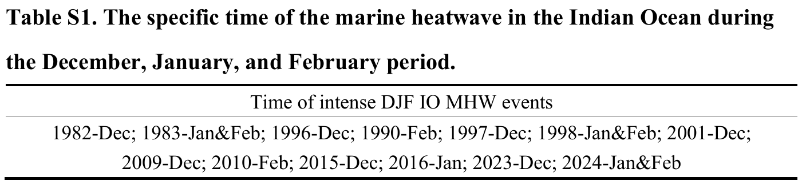
表 S1. 印度洋海洋热浪在 12 月、1 月和 2 月期间的具体发生时间。
Table S1. The specific time of the marine heatwave in the Indian Ocean during the December, January, and February period.
强冬季印度洋海洋热浪事件的发生时间 Time of intense DJF IO MHW events |
1982 年 12 月；1983 年 1 月和 2 月；1996 年 12 月；1990 年 2 月；1997 年 12 月；1998 年 1 月和 2 月；2001 年 12 月；2009 年 12 月；2010 年 2 月；2015 年 12 月；2016 年 1 月；2023 年 12 月；2024 年 1 月和 2 月 1982-Dec; 1983-Jan&Feb; 1996-Dec; 1990-Feb; 1997-Dec; 1998-Jan&Feb; 2001-Dec; 2009-Dec; 2010-Feb; 2015-Dec; 2016-Jan; 2023-Dec; 2024-Jan&Feb |
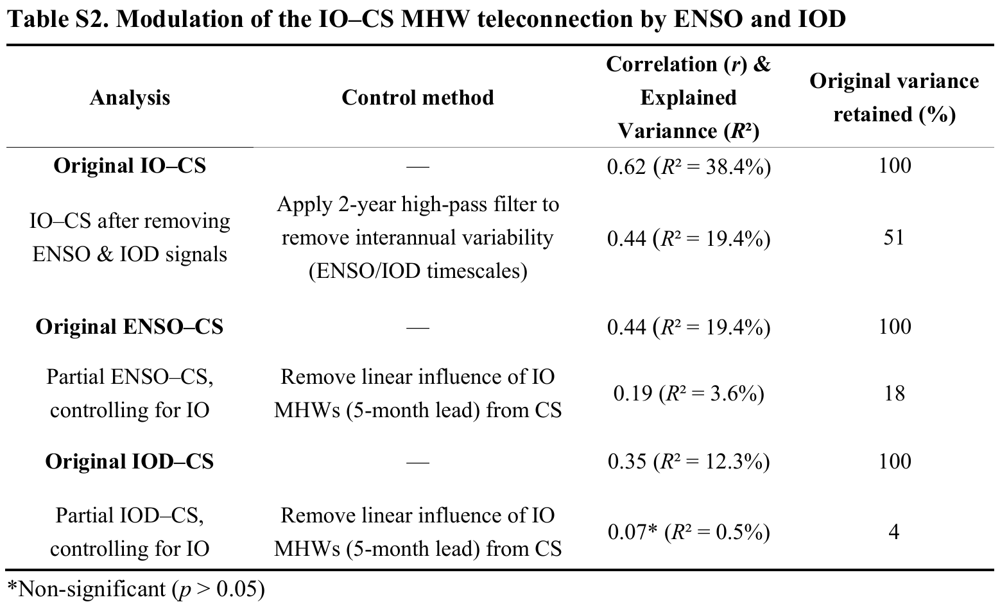
表 S2. ENSO 和 IOD 对印度洋—加勒比海海洋热浪遥相关的调制
Table S2. Modulation of the IO–CS MHW teleconnection by ENSO and IOD
分析 Analysis | 控制方法 Control method | 相关系数（r）和方差解释率（R²） Correlation (r) & Explained Variannce (R²) | 保留的原始方差（%） Original variance retained (%) |
原始印度洋—加勒比海关系 Original IO–CS | — — | 0.62（R² = 38.4%） 0.62 (R² = 38.4%) | 100 100 |
去除 ENSO 和 IOD 信号后的印度洋—加勒比海关系 IO–CS after removing ENSO & IOD signals | 应用 2 年高通滤波，去除年际变率（ENSO/IOD 时间尺度） Apply 2‑year high‑pass filter to remove interannual variability (ENSO/IOD timescales) | 0.44（R² = 19.4%） 0.44 (R² = 19.4%) | 51 51 |
原始 ENSO—加勒比海关系 Original ENSO–CS | — — | 0.44（R² = 19.4%） 0.44 (R² = 19.4%) | 100 100 |
控制印度洋影响后的 ENSO—加勒比海偏相关关系 Partial ENSO–CS, controlling for IO | 从加勒比海信号中去除印度洋海洋热浪（超前 5 个月）的线性影响 Remove linear influence of IO MHWs (5‑month lead) from CS | 0.19（R² = 3.6%） 0.19 (R² = 3.6%) | 18 18 |
原始 IOD—加勒比海关系 Original IOD–CS | — — | 0.35（R² = 12.3%） 0.35 (R² = 12.3%) | 100 100 |
控制印度洋影响后的 IOD—加勒比海偏相关关系 Partial IOD–CS, controlling for IO | 从加勒比海信号中去除印度洋海洋热浪（超前 5 个月）的线性影响 Remove linear influence of IO MHWs (5‑month lead) from CS | 0.07*（R² = 0.5%） 0.07* (R² = 0.5%) | 4 4 |
*不显著（p > 0.05）
*Non‑significant (p > 0.05)
表 S2. 原始印度洋—加勒比海相关（r = 0.62，R² = 38.4%）是冬季印度洋海洋热浪与春夏季（MAM–JJA）加勒比海海洋热浪之间最大的超前—滞后相关（印度洋超前 5 个月）。
Table S2. The original IO–CS correlation (r = 0.62, R² = 38.4%) is the maximum lead‑lag relationship between DJF IO MHWs and MAM–JJA CS MHWs (IO leads by 5 months).
通过 2 年高通滤波去除 ENSO 和 IOD 信号后，相关系数为 0.44（R² = 19.4%），仍保留原始方差的 51%。
When both ENSO and IOD signals are removed via a 2‑year high‑pass filter, the correlation is 0.44 (R² = 19.4%), again retaining 51% of the original variance.
作为比较，原始 ENSO—加勒比海相关系数（ENSO 超前加勒比海 5 个月）为 0.44（R² = 19.4%）。
For comparison, the original ENSO–CS correlation (ENSO leads CS by 5 months) is 0.44 (R² = 19.4%).
去除印度洋影响后，偏相关系数降至 0.19，仅保留原始 ENSO—加勒比海方差的 18%。
After removing the influence of IO, the partial correlation drops to 0.19, retaining only 18% of the original ENSO–CS variance.
类似地，原始 IOD—加勒比海相关系数为 0.35（R² = 12.3%）；控制印度洋影响后，该值降至 0.07（不显著），仅保留原始方差的 4%。
Similarly, the original IOD–CS correlation is 0.35 (R² = 12.3%), which reduces to 0.07 (non‑significant) after controlling for IO, retaining only 4% of the original variance.
这些结果表明，ENSO 和 IOD 与加勒比海海洋热浪之间的表观联系在很大程度上通过印度洋传递，而印度洋—加勒比海遥相关仍保留了相当一部分独立于这些气候模态的成分。
These results demonstrate that the apparent relationships of ENSO and IOD with CS MHWs are largely mediated through the Indian Ocean, while the IO–CS teleconnection retains a substantial component independent of these climate modes.
图件
Figures
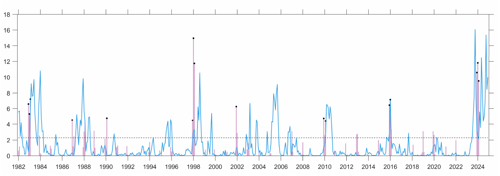
补充图 S1. 加勒比海海洋热浪指数异常（折线）和冬季印度洋海洋热浪指数异常（柱状）的时间序列。
Supplementary Figure S1. Time series of CS MHWI anomalies (line) and DJF IO MHWI anomalies (bar) anomalies.
虚线表示加勒比海海洋热浪指数的 1 个标准差，圆点表示超过 1 个标准差的印度洋海洋热浪指数。
Dashed line indicates one standard deviation of CS MHWI and dots indicates IO MHWI that exceed one standard deviation.
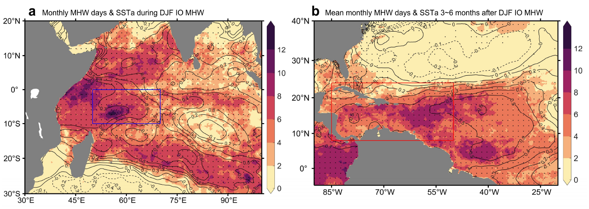
补充数据图 S2. 强冬季印度洋海洋热浪期间或之后的海表温度异常和海洋热浪。
Supplementary Data Figure S2. SSTa and MHW during or after intense DJF IO MHW.
(a) 强冬季印度洋海洋热浪事件期间印度洋区域海洋热浪日数（填色）和海表温度异常（等值线，间隔 0.1°C）的合成结果。
(a) The composite MHW days (shading) and SSTa (isopleths, intervals 0.1°C) in Indian Ocean region during intense DJF IO MHW events.
圆点表示达到 95% 置信水平的区域，实线（虚线）表示正值（负值）。
Dots indicate the areas with the 95% confidence level, and solid (dashed) lines indicate positive (negative) values.
(b) 同 (a)，但为强冬季印度洋海洋热浪事件之后第 3–6 个月加勒比海区域的平均海洋热浪日数和海表温度异常。
(b) As in (a), but for averaged MHW days and SSTa 3–6 months after intense DJF IO MHW events with in Caribbean Sea region.
a. 冬季印度洋海洋热浪期间的月海洋热浪日数和海表温度异常
a. Monthly MHW days & SSTa during DJF IO MHW
b. 冬季印度洋海洋热浪之后第 3–6 个月的平均月海洋热浪日数和海表温度异常
b. Mean monthly MHW days & SSTa 3~6 months after DJF IO MHW
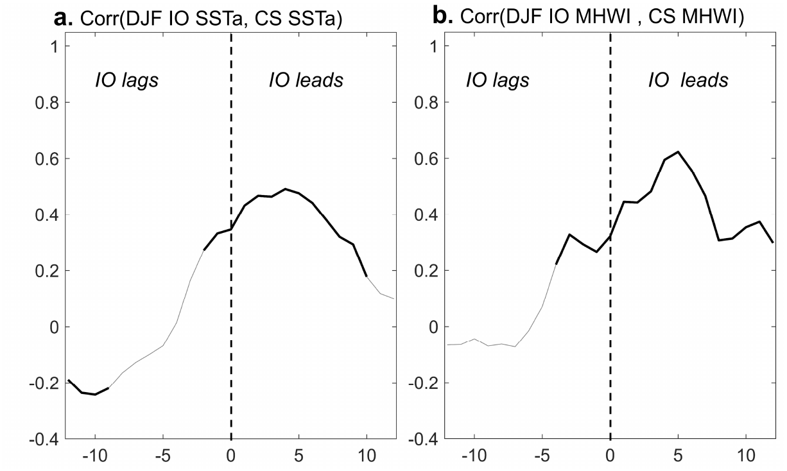
补充图 S3. 分别使用海洋热浪指数和原始海表温度异常得到的印度洋与加勒比海之间的超前—滞后相关。
Supplementary Figure S3. The lead–lag correlation between IO and CS using MHW indices versus raw SST anomalies.
(a) 北半球冬季（DJF）印度洋区域平均海表温度异常与加勒比海区域平均海表温度异常之间的超前—滞后相关。
(a) Lead-lag correlation between the boreal winter (DJF) regional averaged IO SSTa and regional averaged CS SSTa.
粗线表示超过 95% 置信水平。
Bold lines denote above the 95% confidence level.
横轴正数（负数）对应北半球冬季（DJF）之后（之前）的时间（单位：月）。
The positive (negative) numbers on the horizontal axis correspond to the time (unit: months) after (before) boreal winter (DJF).
(b) 同 (a)，但为北半球冬季（DJF）印度洋海洋热浪指数与加勒比海海洋热浪指数之间的超前—滞后相关。
(b) as in (a), but for lead-lag correlation between the boreal winter (DJF) IO MHWI and CS MHWI.
a. 冬季印度洋海表温度异常与加勒比海海表温度异常的相关
a. Corr(DJF IO SSTa, CS SSTa)
印度洋滞后
IO lags
印度洋超前
IO leads
b. 冬季印度洋海洋热浪指数与加勒比海海洋热浪指数的相关
b. Corr(DJF IO MHWI, CS MHWI)
印度洋滞后
IO lags
印度洋超前
IO leads
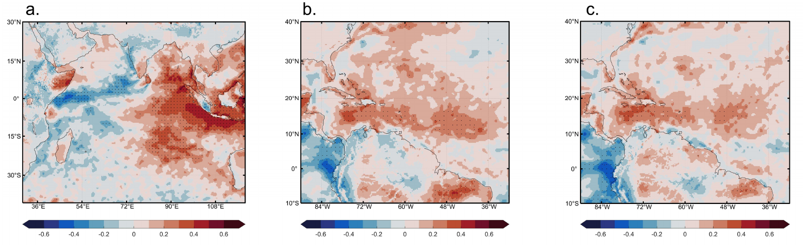
补充图 S4. 区域平均海洋热浪指数与净表面热通量（由大气指向海洋或陆地）之间的相关分布图。
Supplementary Figure S4. Maps of correlation between the regional averaged MHW index and net surface heat flux (atmosphere-to-ocean or land).
圆点表示置信水平超过 95% 的区域。
Dots indicate area confidence exceed 95%.
(a) 冬季印度洋海洋热浪指数与同期净表面热通量的相关。
(a) for DJF IO MHWI and concurrent net surface heat flux.
(b) 春季（MAM）加勒比海海洋热浪指数与同期净表面热通量的相关。
(b) for MAM CS MHWI and concurrent net surface heat flux.
(c) 夏季（JJA）加勒比海 MHGI 与春季（MAM）净表面热通量的相关。
(c) for JJA CS MHGI and MAM net surface heat flux.
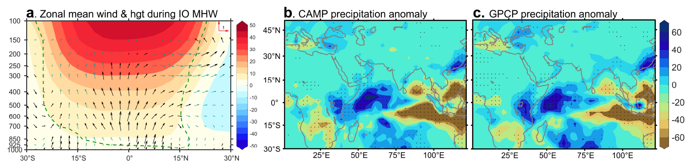
补充图 S5. 强冬季印度洋海洋热浪事件期间的大气垂直环流和降水状况。
Supplementary Figure S5. The vertical atmospheric circulation and precipitation conditions during intense DJF IO MHW events.
(a) 强冬季印度洋海洋热浪事件期间，印度洋上空纬向平均（30°–70°E）速度异常（箭头）和位势高度异常（填色）的纬度—高度分布。
(a) The latitude-height distribution of zonally averaged (30°–70°E) velocity anomalies (quivers) and geopotential height anomalies (shading) over the Indian Ocean during intense DJF IO MHW events.
参考箭头（白框内的红色箭头）表示水平风速 1 m/s 和垂直速度 0.01 Pa/s。
The reference quiver (red, in white box) represents a horizontal wind speed of 1 m/s and a vertical velocity of 0.01 Pa/s.
注意，为便于可视化，垂直速度分量放大了 100 倍。
Note that the vertical velocity component is scaled by a factor of 100 for visualization.
黑色箭头（绿色虚线）表示速度（位势高度）的置信水平超过 95%。
Black quivers (green dashed line) indicate velocity (geopotential height) confidence exceed 95%.
(b) CAMP 数据集中的降水异常（单位：mm/month）。
(b) The precipitation anomalies (unit: mm/month) in CAMP dataset.
圆点表示置信水平超过 90% 的区域。
Dots indicate area confidence exceed 90%.
(c) 同 (b)，但使用 GPCP 数据集。
(c) as in (b) but for GPCP dataset.
a. 印度洋海洋热浪期间的纬向平均风和位势高度
a. Zonal mean wind & hgt during IO MHW
b. CAMP 降水异常
b. CAMP precipitation anomaly
c. GPCP 降水异常
c. GPCP precipitation anomaly
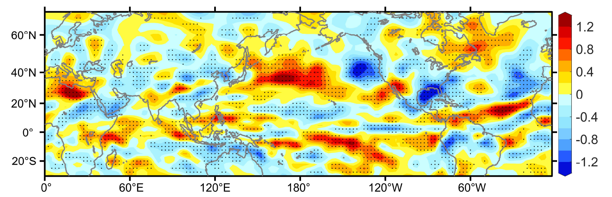
补充图 S6. 冬季印度洋海洋热浪期间的标准化罗斯贝波源异常。
Supplementary Figure S6. Standardized Rossby wave sources anomalies during DJF IO MHW.
罗斯贝波源（RWS）异常的单位为标准差的倍数。
The unit of RWS anomalies is multiples of the standard deviation.
圆点表示达到 95% 置信水平的区域。
Dots indicate the areas with the 95% confidence level.
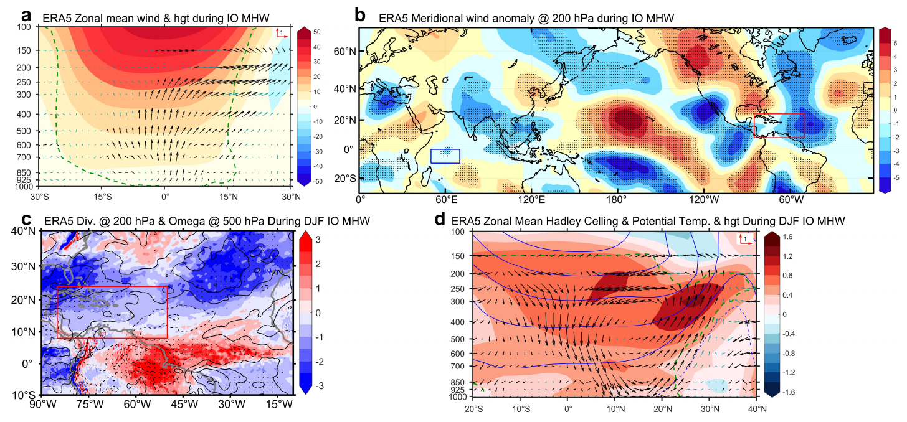
补充图 S7. ERA5 数据集中冬季印度洋海洋热浪期间的大气状况。
Supplementary Figure S7. Atmospheric situation in the ERA5 dataset during DJF IO MHW.
(a) 同图 S5a。
(a) As in Fig.S5a.
(b) 同图 2c。
(b) As in Fig.2c.
(c) 同图 3a。
(c) As in Fig.3a.
(d) 同图 3b。
(d) As in Fig.3b.
a. ERA5 中印度洋海洋热浪期间的纬向平均风和位势高度
a. ERA5 Zonal mean wind & hgt during IO MHW
b. ERA5 中印度洋海洋热浪期间 200 hPa 经向风异常
b. ERA5 Meridional wind anomaly @ 200 hPa during IO MHW
c. ERA5 中冬季印度洋海洋热浪期间的 200 hPa 散度和 500 hPa 垂直速度（Omega）
c. ERA5 Div. @ 200 hPa & Omega @ 500 hPa During DJF IO MHW
d. ERA5 中冬季印度洋海洋热浪期间的纬向平均哈德莱环流、位温和位势高度
d. ERA5 Zonal Mean Hadley Celling & Potential Temp. & hgt During DJF IO MHW
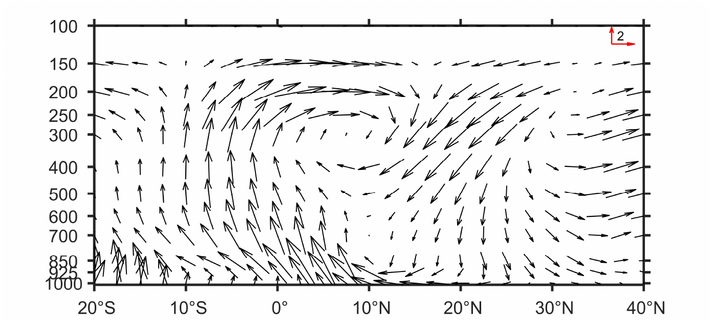
补充图 S8. 北大西洋大气运动的纬向平均气候态。
Supplementary Figure S8. The zonal mean climatological state of atmospheric movement in the north Atlantic Ocean.
红色参考箭头表示水平风速 2 m/s 和垂直速度 0.02 Pa/s。
The red reference quiver represents a horizontal wind speed of 2 m/s and a vertical velocity of 0.02 Pa/s.
注意，为便于可视化，垂直速度分量放大了 100 倍。
Note that the vertical velocity component is scaled by a factor of 100 for visualization.
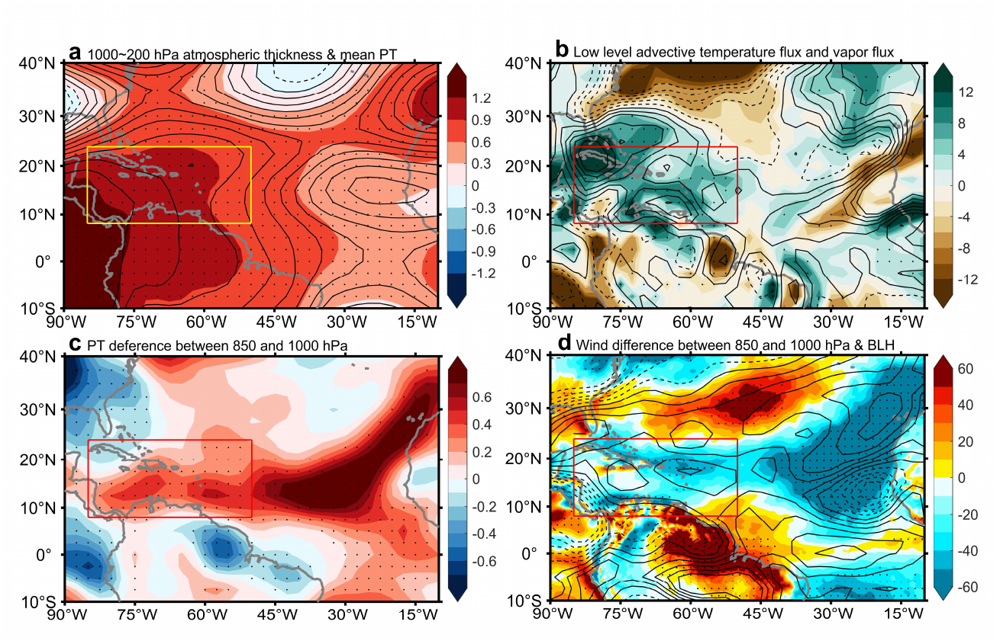
补充图 S9. 强冬季印度洋海洋热浪期间加勒比海区域的大气状态。
Supplementary Figure S9. The atmospheric state in the Caribbean Sea region during the intense DJF IO MHW.
(a) 1000 至 200 hPa 之间大气厚度异常（等值线，间隔 5 gpm）和平均位温异常（填色，单位：℃）的分布。
(a) Distribution of atmospheric thickness anomalies (isopleths, interval 5 gpm) and mean potential temperature anomalies (shading, unit: ℃) between 1000 and 200 hPa.
(b) 温度平流通量异常（等值线，间隔 4 ℃ month⁻¹）和水汽平流通量异常（填色，单位：g kg⁻¹ month⁻¹）的分布。
(b) Distribution of advective temperature flux anomalies (isopleths, interval 4 ℃ month-1) and advective vapor flux anomalies (shading, unit: g kg-1month-1).
(c) 850 与 1000 hPa 之间位温差异常的分布（单位：℃）。
(c) Distribution of potential temperature differences anomalies between 850 and 1000 hPa (unit: ℃).
(d) 边界层高度异常（填色，单位：m）和 850 与 1000 hPa 之间风差异常（等值线，间隔 0.2 m s⁻¹）的分布。
(d) Distribution of boundary layer height anomalies (shading, unit: m) and wind difference anomalies (isopleths, interval 0.2 m s-1) between 850 and 1000 hPa.
所有子图中的圆点均表示达到 95% 置信水平的区域。
Dots indicate the areas with the 95% confidence level on all subplots.
a. 1000–200 hPa 大气厚度和平均位温
a. 1000~200 hPa atmospheric thickness & mean PT
b. 低层温度平流通量和水汽平流通量
b. Low level advective temperature flux and vapor flux
c. 850 与 1000 hPa 之间的位温差
c. PT deference between 850 and 1000 hPa
d. 850 与 1000 hPa 之间的风差和边界层高度
d. Wind difference between 850 and 1000 hPa & BLH
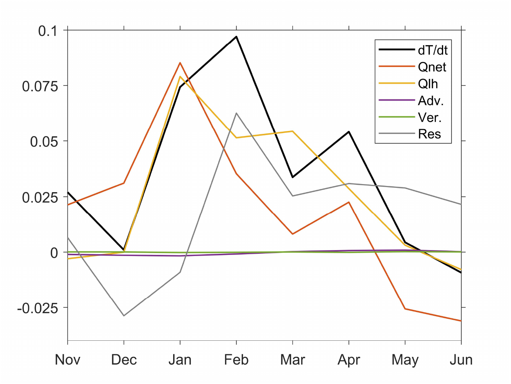
补充图 S10. 印度洋海洋热浪发生前后加勒比海区域热收支（单位：°C month⁻¹）的逐月演变。
Supplementary Figure S10. The monthly evolution of the heat budget (units: °C month−1) in the CS region before and after IO MHW.
黑色曲线表示混合层温度倾向；红色曲线表示总表面净热通量；橙色曲线表示表面潜热通量；绿色（紫色）曲线表示水平（垂直）平流；灰色曲线表示残差项。
The black curve represents the tendency of mixed layer temperature; the red curve represents the total surface net heat flux; the orange curve represents the surface latent heat flux; the green (purple) curve represents horizontal (vertical) advection; the gray curve denotes the residual term.
温度变化率（dT/dt）
dT/dt
净表面热通量（Qnet）
Qnet
表面潜热通量（Qlh）
Qlh
平流项（Adv.）
Adv.
垂直平流项（Ver.）
Ver.
残差项（Res）
Res
11 月、12 月、1 月、2 月、3 月、4 月、5 月、6 月
Nov Dec Jan Feb Mar Apr May Jun
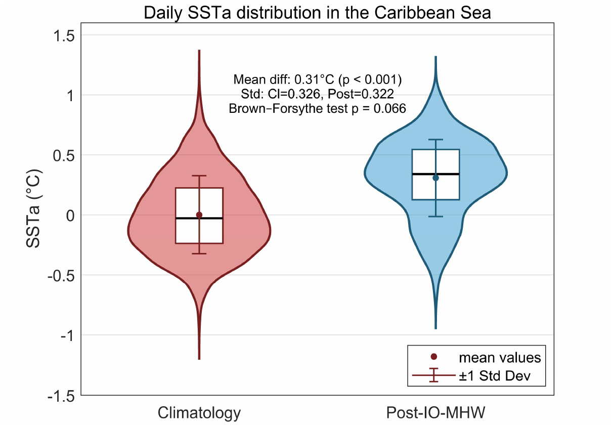
补充图 S11. 加勒比海气候态下与冬季印度洋海洋热浪之后第 3–6 个月期间逐日海表温度异常分布的比较。
Supplementary Figure S11. Comparison of daily SSTa distribution between climatology and the 3–6 month period following DJF IO MHWs in the Caribbean Sea.
小提琴图显示了气候态时段（1982–2011 年）和冬季印度洋海洋热浪之后第 3–6 个月期间逐日海表温度的概率密度分布。
Violin plots show the probability density distribution of daily SST for the climatological period (1982–2011) and the 3–6 month period following DJF IO MHWs.
小提琴形状中的红色填充表示气候态，蓝色填充表示印度洋海洋热浪之后。
The violin shapes are filled with red for climatology, blue for post-IO-MHW.
每个小提琴形状内部的箱体表示四分位区间（第 25–75 百分位数范围），黑色水平线表示中位数。
Inside each violin, a box indicates the interquartile range (25th–75th percentiles), and the median is shown as a black horizontal line.
两端带横线的黑色误差棒表示平均值 ± 1 个标准差。
The black error bars with caps represent the mean ± 1 standard deviation.
加勒比海逐日海表温度异常分布
Daily SSTa distribution in the Caribbean Sea
海表温度异常（°C）
SSTa (°C)
平均值之差：0.31°C（p < 0.001）
Mean diff: 0.31°C (p < 0.001)
标准差：气候态 = 0.326，事件后 = 0.322
Std: Cl=0.326, Post=0.322
Brown–Forsythe 检验 p = 0.066
Brown–Forsythe test p = 0.066
气候态
Climatology
印度洋海洋热浪之后
Post-IO-MHW
平均值
mean values
±1 个标准差
±1 Std Dev
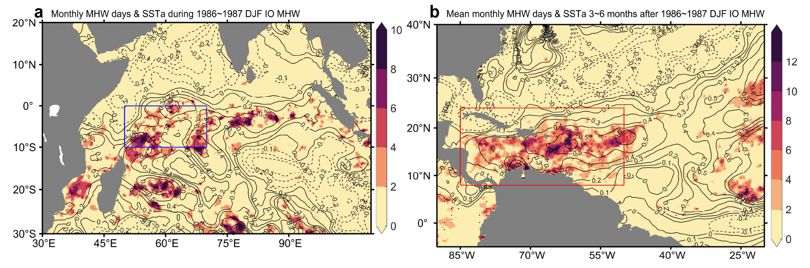
补充图 S12. 冬季印度洋海洋热浪期间或之后的海表温度异常和海洋热浪日数。
Supplementary Figure S12. SSTa and MHW days during or after DJF IO MHW.
同补充材料图 S2，但对应 1986–1987 年冬季印度洋海洋热浪及随后 1987 年春夏季（MAM–JJA）加勒比海海洋热浪。
As in Fig. S2 in auxiliary material, but for the DJF 1986–1987 IO MHW and the subsequent MAM–JJA 1987 season CS MHWs.
a. 1986–1987 年冬季印度洋海洋热浪期间的月海洋热浪日数和海表温度异常
a. Monthly MHW days & SSTa during 1986~1987 DJF IO MHW
b. 1986–1987 年冬季印度洋海洋热浪之后第 3–6 个月的平均月海洋热浪日数和海表温度异常
b. Mean monthly MHW days & SSTa 3~6 months after 1986~1987 DJF IO MHW
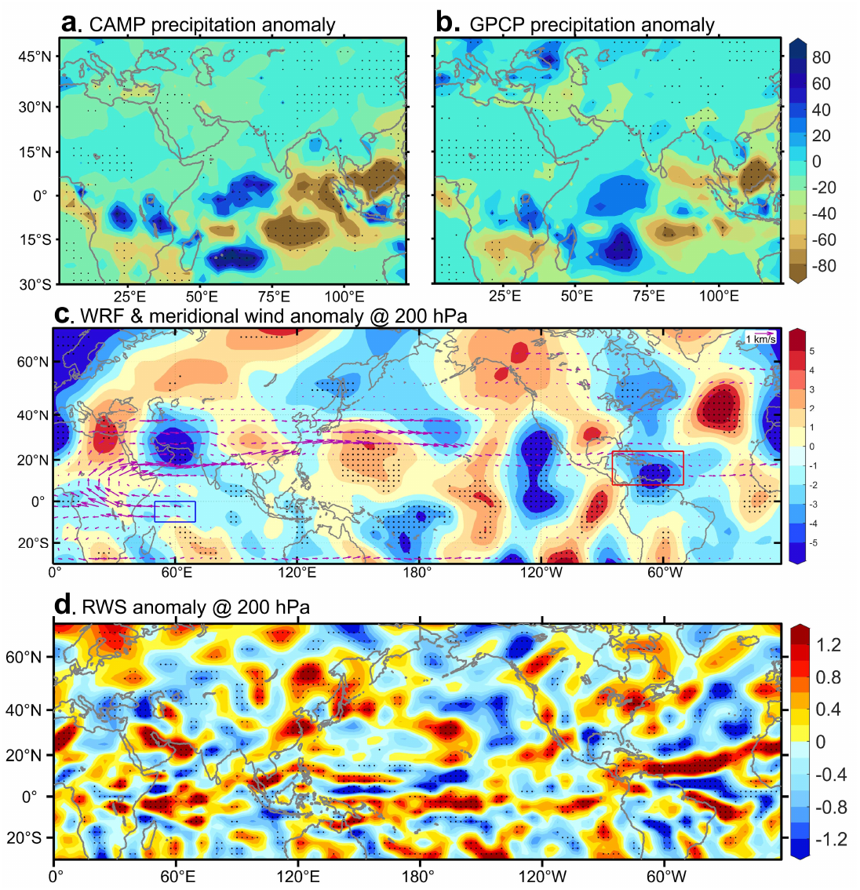
补充图 S13. 强冬季印度洋海洋热浪期间的大气环流和降水状况。
Supplementary Figure S13. The atmospheric circulation and precipitation conditions during intense DJF IO MHWs.
(a) 和 (b) 同图 S5b 和 S5c，但对应 1986–1987 年冬季印度洋海洋热浪。
(a)&(b) as in Fig. S5b&c, but for but for the DJF 1986–1987 IO MHW.
圆点表示置信水平超过 80% 的区域。
Dots indicate area confidence exceed 80%.
(c) 同正文图 2b，但对应 1986–1987 年冬季印度洋海洋热浪。
(c) as in Fig. 2b in main text, but for but for the DJF 1986–1987 IO MHW.
(d) 同图 S6，但对应 1986–1987 年冬季印度洋海洋热浪。
(d) as in Fig. S6, but for but for the DJF 1986–1987 IO MHW.
a. CAMP 降水异常
a. CAMP precipitation anomaly
b. GPCP 降水异常
b. GPCP precipitation anomaly
c. 200 hPa 罗斯贝波射线通量（WRF）与经向风异常
c. WRF & meridional wind anomaly @ 200 hPa
d. 200 hPa 罗斯贝波源（RWS）异常
d. RWS anomaly @ 200 hPa
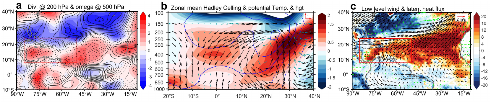
补充图 S14. 北大西洋大气和海洋对 IPAT 大气桥的响应。
Supplementary Figure S14. The response of the atmosphere and ocean in the North Atlantic to the IPAT atmospheric bridge.
同正文图 3a–c，但对应 1986–1987 年冬季印度洋海洋热浪。
As in Fig. 3a–c in main text, but for the DJF 1986–1987 IO MHW.
a. 200 hPa 散度和 500 hPa 垂直速度（omega）
a. Div. @ 200 hPa & omega @ 500 hPa
b. 纬向平均哈德莱环流、位温和位势高度
b. Zonal mean Hadley Celling & potential Temp. & hgt
c. 低层风和潜热通量
c. Low level wind & latent heat flux
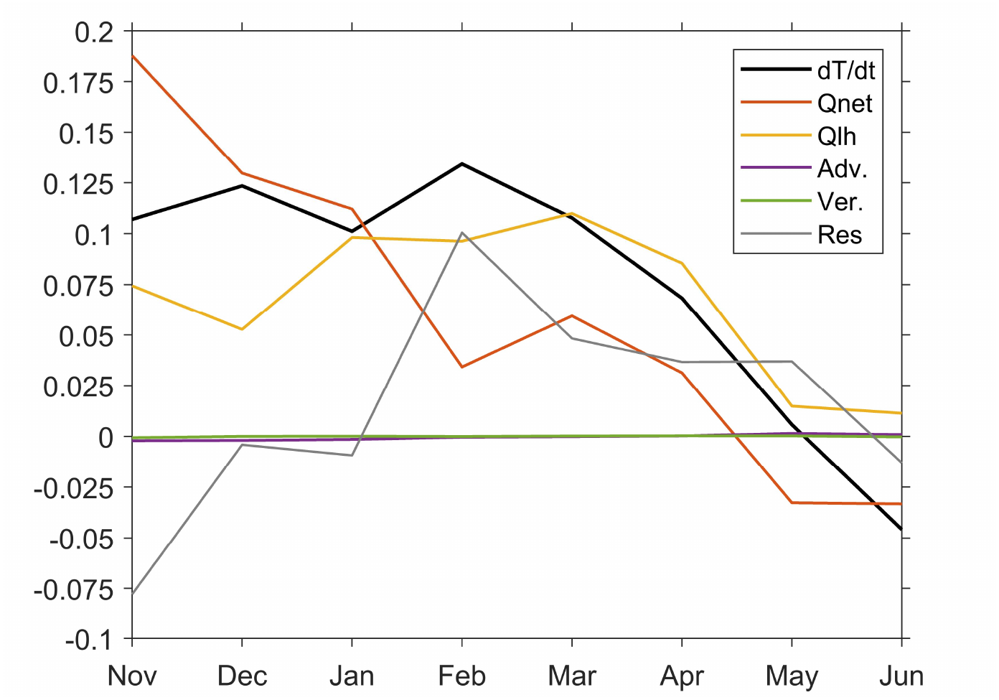
补充图 S15. 1986–1987 年冬季印度洋海洋热浪发生前后加勒比海区域热收支（单位：°C month⁻¹）的逐月演变。
Supplementary Figure S15. The monthly evolution of the heat budget (units: °C month−1) in the CS region before and after 1986–1987 DJF IO MHW.
温度变化率（dT/dt）
dT/dt
净表面热通量（Qnet）
Qnet
表面潜热通量（Qlh）
Qlh
平流项（Adv.）
Adv.
垂直平流项（Ver.）
Ver.
残差项（Res）
Res
11 月、12 月、1 月、2 月、3 月、4 月、5 月、6 月
Nov Dec Jan Feb Mar Apr May Jun
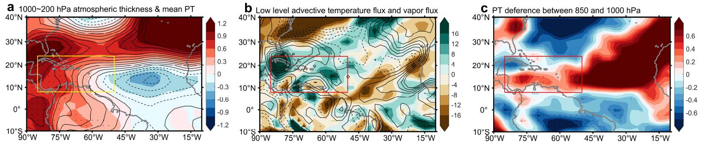
补充图 S16. 强冬季印度洋海洋热浪期间加勒比海区域的大气状态。
Supplementary Figure S16. The atmospheric state in the Caribbean Sea region during the intense DJF IO MHW.
同补充材料中的图 S9&a–c，但对应 1986–1987 年冬季印度洋海洋热浪。
As in Fig. S9&a–c in auxiliary material, but for the DJF 1986–1987 IO MHW.
a. 1000–200 hPa 大气厚度和平均位温
a. 1000~200 hPa atmospheric thickness & mean PT
b. 低层温度平流通量和水汽平流通量
b. Low level advective temperature flux and vapor flux
c. 850 与 1000 hPa 之间的位温差
c. PT deference between 850 and 1000 hPa
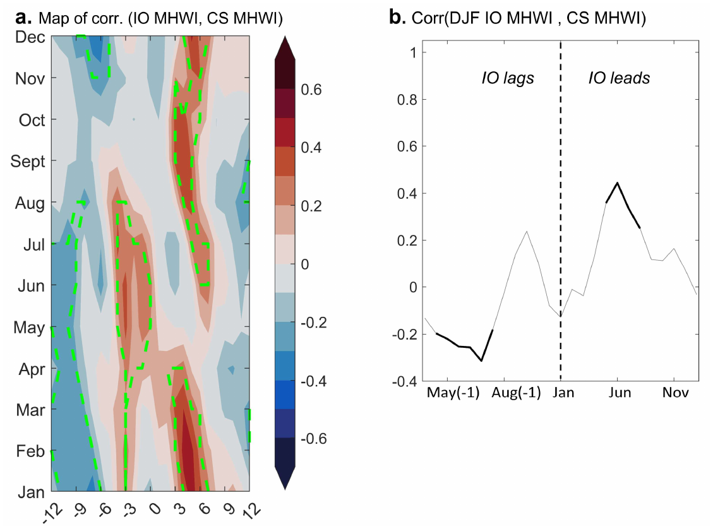
补充图 S17. 去除 2 年滑动平均分量后印度洋海洋热浪指数与加勒比海海洋热浪指数之间的相关性
Supplementary Figure S17. Correlation between IO MHWI and CS MHWI after 2-year running mean component removed
(a) 各月印度洋海洋热浪指数与加勒比海海洋热浪指数之间的超前—滞后相关分布图。
(a) Lead-lag correlation map between the IO MHWI and CS MHWI for each month.
纵轴表示各月的印度洋海洋热浪指数，横轴正值（负值）表示印度洋海洋热浪指数超前（滞后）加勒比海海洋热浪指数的时间长度（单位：月）。
The vertical axis represents the IO MHWI for each month, while positive (negative) values on the horizontal axis indicate the length of time (in months) by which the IO MHWI leads (lags) the CS MHWI.
绿色虚线围成的区域表示超过 95% 置信水平的区域。
The area enclosed by the green dashed line denotes regions exceeding the 95% confidence level.
(b) 北半球冬季（DJF）印度洋海洋热浪指数与加勒比海海洋热浪指数之间的超前—滞后相关。
(b) Lead-lag correlation between the boreal winter (DJF) IO MHWI and CS MHWI.
粗线表示超过 95% 置信水平。
Bold lines denote above the 95% confidence level.
横轴正数（负数）对应北半球冬季（DJF）之后（之前）的时间（单位：月）。
The positive (negative) numbers on the horizontal axis correspond to the time (unit: months) after (before) boreal winter (DJF).
a. 印度洋海洋热浪指数与加勒比海海洋热浪指数的相关分布图
a. Map of corr. (IO MHWI, CS MHWI)
12 月、11 月、10 月、9 月、8 月、7 月、6 月、5 月、4 月、3 月、2 月、1 月
Dec Nov Oct Sept Aug Jul Jun May Apr Mar Feb Jan
b. 冬季印度洋海洋热浪指数与加勒比海海洋热浪指数的相关
b. Corr(DJF IO MHWI, CS MHWI)
印度洋滞后
IO lags
印度洋超前
IO leads
前一年 5 月、前一年 8 月、1 月、6 月、11 月
May(-1) Aug(-1) Jan Jun Nov
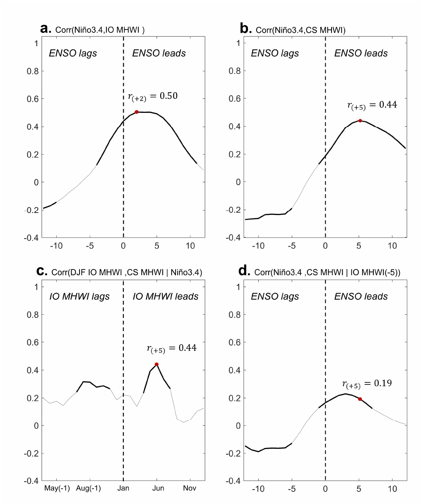
补充图 S19. Niño3.4、印度洋海洋热浪指数和加勒比海海洋热浪指数之间的超前—滞后相关。
Supplementary Figure S19. The lead–lag correlations among Niño3.4, IO MHWI, and CS MHWI.
(a) Niño3.4 指数与印度洋海洋热浪指数之间的超前—滞后相关。
(a) Lead-lag correlation between Niño3.4 index and IO MHWI.
粗线表示超过 95% 置信水平。
Bold lines denote above the 95% confidence level.
横轴正数（负数）对应北半球冬季（DJF）之后（之前）的时间（单位：月）。
The positive (negative) numbers on the horizontal axis correspond to the time (unit: months) after (before) boreal winter (DJF).
(b) 同 (a)，但为 Niño3.4 指数与加勒比海海洋热浪指数之间的超前—滞后相关。
(b) as in (a), but for lead-lag correlation between Niño3.4 index and CS MHWI.
(c) 同 (a)，但为从两个指数中分别剔除 Niño3.4 信号后，印度洋海洋热浪指数与加勒比海海洋热浪指数之间的超前—滞后相关。
(c) as in (a), but for lead-lag correlation between IO MHWI and CS MHWI after partialling out the Niño3.4 signal from both indices.
(d) 同 (a)，但为从加勒比海海洋热浪指数中剔除印度洋海洋热浪指数（超前 5 个月）信号后，Niño3.4 指数与加勒比海海洋热浪指数之间的超前—滞后相关。
(d) as in (a), but for lead-lag correlation between Niño3.4 index and CS MHWI after partialling out the IO MHWI (at 5‑month lead) signal from CS MHWI.
a. Niño3.4 与印度洋海洋热浪指数的相关
a. Corr(Niño3.4,IO MHWI)
ENSO 滞后
ENSO lags
ENSO 超前
ENSO leads
r₍₊₂₎ = 0.50
r₍₊₂₎ = 0.50
b. Niño3.4 与加勒比海海洋热浪指数的相关
b. Corr(Niño3.4,CS MHWI)
ENSO 滞后
ENSO lags
ENSO 超前
ENSO leads
r₍₊₅₎ = 0.44
r₍₊₅₎ = 0.44
c. 控制 Niño3.4 后，冬季印度洋海洋热浪指数与加勒比海海洋热浪指数的偏相关
c. Corr(DJF IO MHWI, CS MHWI | Niño3.4)
印度洋海洋热浪指数滞后
IO MHWI lags
印度洋海洋热浪指数超前
IO MHWI leads
r₍₊₅₎ = 0.44
r₍₊₅₎ = 0.44
前一年 5 月、前一年 8 月、1 月、6 月、11 月
May(-1) Aug(-1) Jan Jun Nov
d. 控制超前 5 个月的印度洋海洋热浪指数后，Niño3.4 与加勒比海海洋热浪指数的偏相关
d. Corr(Niño3.4, CS MHWI | IO MHWI(-5))
ENSO 滞后
ENSO lags
ENSO 超前
ENSO leads
r₍₊₅₎ = 0.19
r₍₊₅₎ = 0.19
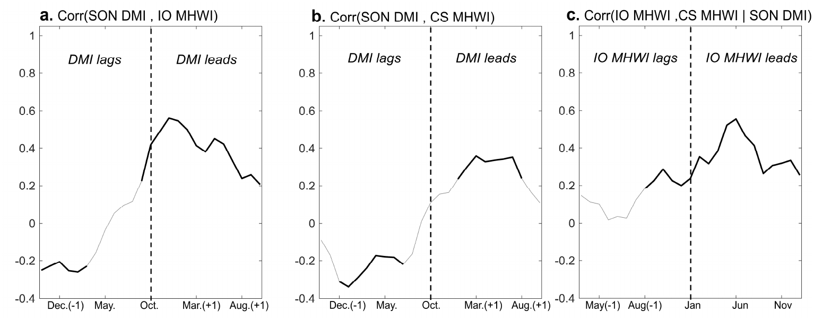
补充图 S19. DMI、印度洋海洋热浪指数和加勒比海海洋热浪指数之间的超前—滞后相关。
Supplementary Figure S19. The lead–lag correlations among DMI, IO MHWI, and CS MHWI.
(a) 北半球秋季（SON）的 DMI 与印度洋海洋热浪指数之间的超前—滞后相关。
(a) Lead-lag correlation between the boreal autumn (SON) DMI and IO MHWI.
粗线表示超过 95% 置信水平。
Bold lines denote above the 95% confidence level.
横轴正数（负数）对应北半球秋季（SON）之后（之前）的时间（单位：月）。
The positive (negative) numbers on the horizontal axis correspond to the time (unit: months) after (before) boreal autumn (SON).
(b) 同 (a)，但为北半球秋季（SON）的 DMI 与加勒比海海洋热浪指数之间的超前—滞后相关。
(b) as in (a) but for lead-lag correlation between the boreal autumn (SON) DMI and CS MHWI.
(c) 同 (a)，但为去除秋季（SON）DMI 信号后，北半球冬季（DJF）印度洋海洋热浪指数与加勒比海海洋热浪指数之间的超前—滞后相关。
(c) as in (a) but for lead-lag correlation between the boreal winter (DJF) IO MHWI and CS MHWI after the signal of SON DMI removed.
a. 秋季 DMI 与印度洋海洋热浪指数的相关
a. Corr(SON DMI, IO MHWI)
DMI 滞后
DMI lags
DMI 超前
DMI leads
前一年 12 月、5 月、10 月、下一年 3 月、下一年 8 月
Dec.(-1) May. Oct. Mar.(+1) Aug.(+1)
b. 秋季 DMI 与加勒比海海洋热浪指数的相关
b. Corr(SON DMI, CS MHWI)
DMI 滞后
DMI lags
DMI 超前
DMI leads
前一年 12 月、5 月、10 月、下一年 3 月、下一年 8 月
Dec.(-1) May. Oct. Mar.(+1) Aug.(+1)
c. 控制秋季 DMI 后，印度洋海洋热浪指数与加勒比海海洋热浪指数的偏相关
c. Corr(IO MHWI, CS MHWI | SON DMI)
印度洋海洋热浪指数滞后
IO MHWI lags
印度洋海洋热浪指数超前
IO MHWI leads
前一年 5 月、前一年 8 月、1 月、6 月、11 月
May(-1) Aug(-1) Jan Jun Nov
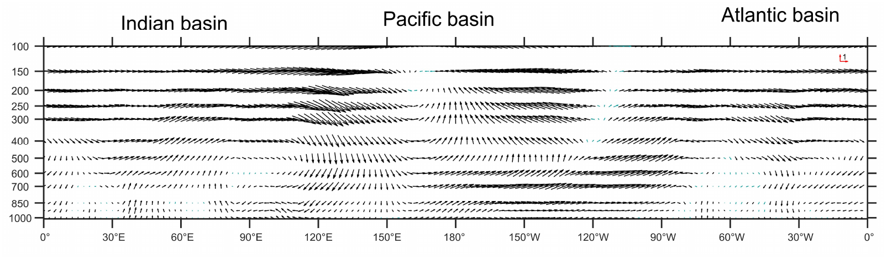
补充图 S20. 强冬季印度洋海洋热浪期间经向平均（20°S–20°N）速度异常（箭头）的经度—高度分布。
Supplementary Figure S20. The longitude-height distribution of meridional averaged (20°S–20°N) velocity anomalies (quivers) during intense DJF IO MHWs.
参考箭头（白框内的红色箭头）表示水平风速 1 m/s 和垂直速度 0.01 Pa/s。
The reference quiver (red, in white box) represents a horizontal wind speed of 1 m/s and a vertical velocity of 0.01 Pa/s.
注意，为便于可视化，垂直速度分量放大了 100 倍。
Note that the vertical velocity component is scaled by a factor of 100 for visualization.
黑色箭头表示速度的置信水平超过 90%。
Black quivers indicate velocity confidence exceed 90%.
印度洋海盆
Indian basin
太平洋海盆
Pacific basin
大西洋海盆
Atlantic basin
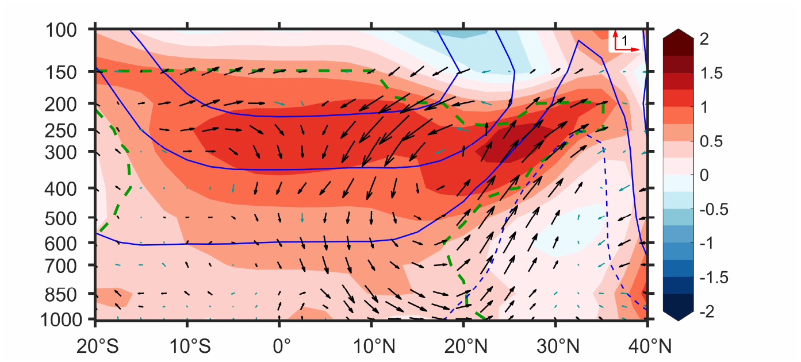
补充图 S21. 冬季印度洋海洋热浪期间，大西洋上空纬向平均（50°–85°W）速度异常（箭头）、位温（填色）和位势高度异常（等值线，间隔 10 m）的纬度—高度分布。
Supplementary Figure S21. The latitude-height distribution of zonally averaged (50°–85°W) velocity anomalies (quivers), potential temperature (shading) and geopotential height anomalies (isopleths, interval 10 m) over Atlantic during DJF IO MHWs.
已去除 2 年滑动平均分量。
The 2-year running mean component is removed.
参考箭头（白框内的红色箭头）表示水平风速 1 m/s 和垂直速度 0.01 Pa/s。
The reference quiver (red, in white box) represents a horizontal wind speed of 1 m/s and a vertical velocity of 0.01 Pa/s.
注意，为便于可视化，垂直速度分量放大了 100 倍。
Note that the vertical velocity component is scaled by a factor of 100 for visualization.
黑色箭头（绿色虚线）表示速度（位势高度）的置信水平超过 90%，实线（虚线）表示正值（负值）。
Black quivers (green dashed line) indicate velocity (geopotential height) confidence exceed 90% and solid (dashed) lines indicate positive (negative) values.
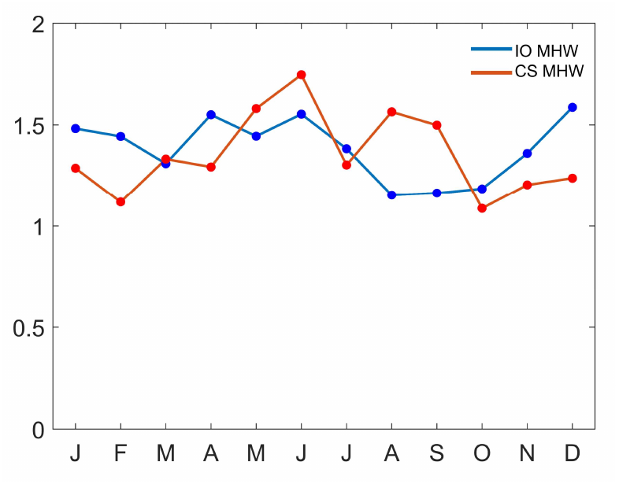
补充图 S22. 印度洋（蓝色）和加勒比海（红色）区域海洋热浪日数的年循环（单位：days/month）。
Supplementary Figure S22. The annual cycle of MHW days (unit: days/month) in IO (bule) and CS (red) regions.
气候态基准期为 1982–2011 年。
The climatological baseline is 1982–2011.
印度洋海洋热浪
IO MHW
加勒比海海洋热浪
CS MHW
1 月、2 月、3 月、4 月、5 月、6 月、7 月、8 月、9 月、10 月、11 月、12 月
J F M A M J J A S O N D
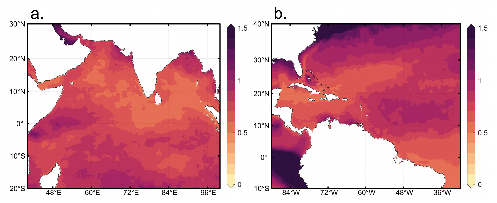
补充图 S23. 印度洋和加勒比海海洋热浪阈值的空间分布（相对于气候态海表温度，单位：℃）。
Supplementary Figure S23. Spatial distribution of MHW thresholds (relative to climatological SST, unit: ℃) in the Indian Ocean and Caribbean Sea.
海洋热浪阈值定义为相对于随季节变化的气候态基准（1982–2011 年）的局地海表温度第 90 百分位数。
The MHW threshold is defined as the 90th percentile of local SST relative to the seasonally varying climatological baseline (1982–2011).
(a) 冬季（DJF）的印度洋（IO）。
(a) Indian Ocean (IO) during DJF.
(b) 春夏季（MAM–JJA）的加勒比海（CS）。
(b) Caribbean Sea (CS) during MAM–JJA.
术语对照
| marine heatwave (MHW) | 海洋热浪 |
| marine heatwave index (MHWI) | 海洋热浪指数 |
| Indian Ocean (IO) | 印度洋 |
| Caribbean Sea (CS) | 加勒比海 |
| sea surface temperature (SST) | 海表温度 |
| SST anomaly (SSTa) | 海表温度异常 |
| lead–lag correlation | 超前—滞后相关 |
| Rossby wave | 罗斯贝波 |
| Rossby wave source (RWS) | 罗斯贝波源 |
| Rossby wave ray flux (WRF) | 罗斯贝波射线通量 |
| Indo-Pacific-Atlantic teleconnection (IPAT) | 印度洋—太平洋—大西洋遥相关 |
| Hadley circulation | 哈德莱环流 |
| anti-Hadley circulation | 反哈德莱环流 |
| Walker circulation | 沃克环流 |
| marine atmospheric boundary layer (MABL) | 海洋大气边界层 |
| mixed-layer heat budget | 混合层热收支 |
| latent heat flux | 潜热通量 |
| squared coherency spectrum | 平方相干谱 |
| cross-spectrum | 交叉谱 |
| lag spectrum | 滞后谱 |
| phase spectrum | 相位谱 |
| potential temperature | 位温 |
| geopotential height | 位势高度 |
| waveguide | 波导 |
| aquaplanet | 水行星 |
| sea surface temperature anomaly (SSTa) | 海表温度异常 |
| partial correlation | 偏相关 |
| high-pass filter | 高通滤波 |
| running mean component | 滑动平均分量 |
| net surface heat flux | 净表面热通量 |
| surface latent heat flux | 表面潜热通量 |
| mixed layer | 混合层 |
| zonal mean / zonally averaged | 纬向平均 |
| meridional mean / meridionally averaged | 经向平均 |
| geopotential height (hgt) | 位势高度 |
| potential temperature (PT) | 位温 |
| atmospheric thickness | 大气厚度 |
| planetary boundary layer | 行星边界层 |
| boundary layer height (BLH) | 边界层高度 |
| advective temperature flux | 温度平流通量 |
| advective vapor flux | 水汽平流通量 |
| wind difference | 风差 |
| Hadley cell | 哈德莱环流 |
| DJF | 冬季（12月至次年2月） |
| MAM | 春季（3–5月） |
| JJA | 夏季（6–8月） |
| SON | 秋季（9–11月） |
| explained variance (R²) | 方差解释率（R²） |
| interquartile range | 四分位区间 |
| confidence level | 置信水平 |
| residual term | 残差项 |
| CAMP | CAMP |
| GPCP | GPCP |
| MHGI | MHGI |
| Key Laboratory of Physical Oceanography | 物理海洋学重点实验室 |